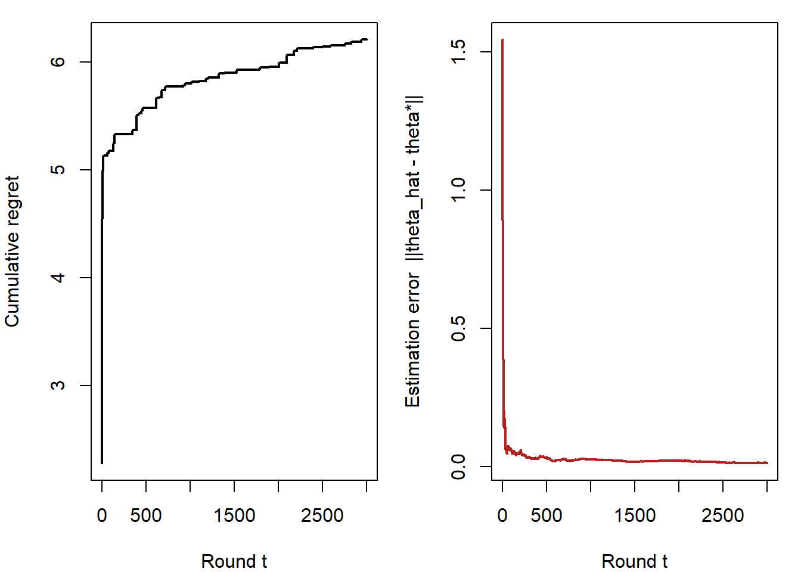

Price is the only element of the marketing mix that directly produces revenue; every other element—product, promotion, place—creates cost. It is also the most quickly adjusted lever a firm controls, the one most visible to competitors, and the one most freighted with psychological meaning for buyers. A one-percentage-point improvement in realized price typically lifts operating profit by far more than an equivalent improvement in volume or variable cost, because price flows to the bottom line undiluted. Yet pricing decisions are routinely delegated to spreadsheets and gut feel, precisely because the object the manager most needs—each buyer’s willingness to pay—is unobserved and actively concealed during exchange.
This chapter treats pricing as the problem of recovering a latent demand object and acting on it. We begin with the primitive: the reservation price, the maximum a buyer will pay, and the demand curve that aggregates reservation prices across a market. From the demand curve we derive the monopolist’s optimal price and the central quantity managers actually estimate—the price elasticity of demand—along with its identification problem. We then study how firms extract more surplus than a single price allows through price discrimination in its three textbook degrees, and how that machinery is implemented as versioning, bundling, and nonlinear tariffs. The second half of the chapter turns behavioral: buyers do not respond to prices as the textbook supposes. They evaluate prices against reference points, they treat a discount differently from a surcharge, they read price as a signal of quality, and they are moved by the framing of a promotion as much as by its depth. We close on the contemporary frontier—dynamic and personalized pricing—where firms set prices that vary across time, context, and individual, and where the gains from discrimination collide with consumer perceptions of fairness and with privacy regulation.
The through-line is measurement. A price is only as good as the demand estimate behind it, and every method we present—from a logit demand model to a conjoint study to a field experiment—is in the end a strategy for estimating how quantity responds to price when price is set by a firm that already knows something the analyst does not. We lead with the economic intuition, give each method its estimator and the assumption that breaks its identification, and supply seeded, runnable code.
20.1 Reservation Prices and Willingness to Pay
The atomic construct of pricing is the reservation price, also called willingness to pay (WTP): the maximum amount a particular consumer would pay for a unit of a product rather than forgo it. Formally, let a consumer derive gross utility (in monetary units) \(v\) from acquiring one unit. Facing price \(p\), the consumer buys if and only if consumer surplus is nonnegative,
\[
\text{buy} \iff v - p \ge 0 \iff p \le v,
\tag{20.1}\]
so \(v\)is the reservation price: the indifference price at which the consumer is exactly willing to transact. Reservation prices are heterogeneous across consumers; the distribution of \(v\) in the population is the economic content of “demand.”
20.1.1 From Reservation Prices to the Demand Curve
Let \(F(\cdot)\) be the cumulative distribution function of reservation prices across a unit mass of potential buyers, so \(F(p) = \Pr(v \le p)\). At posted price \(p\), the buyers are exactly those with \(v \ge p\), a fraction \(1 - F(p)\). Market demand is therefore
\[
Q(p) = M\,\bigl[1 - F(p)\bigr],
\tag{20.2}\]
where \(M\) is market size. The demand curve is the survival function of the reservation-price distribution, scaled by \(M\). This identity is the conceptual bridge between the behavioral object (what individuals will pay) and the aggregate object (how quantity responds to price): the slope of demand is governed by how reservation prices are dispersed. A market in which everyone values the good identically yields a flat demand curve with a single kink; wide dispersion in \(v\) yields a smooth, gently sloped curve.
Reservation price is not the same as the price a consumer expects or prefers
The reservation price is a threshold—the worst deal the consumer would still accept—not the price the consumer hopes to pay or considers fair. Survey methods that ask “what is a reasonable price?” measure a reference price (covered in Section 20.5), not the reservation price. Conflating the two systematically understates WTP and leaves money on the table.
20.1.2 The Monopolist’s Price and the Elasticity
A firm with constant marginal cost \(c\) choosing a single price solves \(\max_p (p - c)\,Q(p)\). The first-order condition can be written in the canonical inverse-elasticity (Lerner) form
where \(\varepsilon < 0\) is the price elasticity of demand, the percentage change in quantity per percentage change in price. The optimal markup over cost, expressed as a fraction of price, equals the reciprocal of the (absolute) elasticity: inelastic demand (\(|\varepsilon|\) small) supports a high markup; elastic demand forces price toward cost. Profit maximization requires operating where \(|\varepsilon| > 1\); no firm optimally prices on the inelastic portion of its demand curve, because there a price increase would raise revenue and cut cost. The elasticity is thus the single most consequential number in pricing, and most of empirical pricing research is, at bottom, the estimation of \(\varepsilon\).
A workhorse functional form is constant-elasticity (log-log) demand, \(\log Q = \alpha + \varepsilon \log p + u\), under which \(\varepsilon\) is a single parameter. The following seeded example simulates a market of heterogeneous reservation prices, recovers the demand curve as the empirical survival function per Equation 20.2, and locates the profit-maximizing price.
Code
set.seed(17)M<-100000# market sizev<-rlnorm(M, meanlog =log(40), sdlog =0.5)# reservation pricesc<-15# marginal costprice_grid<-seq(15, 120, by =1)demand<-sapply(price_grid, function(p)mean(v>=p))*M# eq-demand-from-wtpprofit<-(price_grid-c)*demandp_star<-price_grid[which.max(profit)]q_star<-demand[which.max(profit)]# point elasticity at the optimum via numerical derivativedQ<-diff(demand)/diff(price_grid)elas_at_star<-dQ[which.max(profit)]*p_star/q_starcat("Optimal price p*: ", p_star, "\n")#> Optimal price p*: 41cat("Quantity at p*: ", round(q_star), "\n")#> Quantity at p*: 48208cat("Elasticity at p*: ", round(elas_at_star, 2), "\n")#> Elasticity at p*: -1.64cat("Lerner markup (p*-c)/p*: ", round((p_star-c)/p_star, 3)," vs. -1/elasticity =", round(-1/elas_at_star, 3), "\n")#> Lerner markup (p*-c)/p*: 0.634 vs. -1/elasticity = 0.608
The recovered markup matches \(-1/\varepsilon\) to within grid resolution, confirming Equation 20.3 numerically.
20.1.3 Eliciting Willingness to Pay
Because reservation prices are private, firms must elicit them. Four families of methods dominate, trading off realism against control.
Direct survey methods ask consumers their WTP, either openly or through a sequence of yes/no purchase questions (the contingent-valuation tradition). They are cheap but suffer hypothetical bias: respondents overstate WTP when no money changes hands, and the open-ended format invites strategic understatement.
Incentive-compatible mechanisms make truth-telling a dominant strategy by binding the respondent to a real transaction. In the Becker–DeGroot–Marschak (BDM) procedure the respondent states a bid \(b\); a price \(p\) is then drawn at random, and the respondent buys at \(p\) if \(b \ge p\). Because the stated bid never sets the price the respondent pays, only whether they transact, the respondent’s optimal bid is exactly their true reservation price \(v\). The mechanism is due to Becker, Degroot, and Marschak (1964), and it is the reason the method is trusted for eliciting willingness to pay rather than merely asking for it. Second-price (Vickrey) auctions share this incentive property.
Conjoint analysis infers WTP indirectly from trade-offs. Respondents choose among profiles that vary attributes (including price); a discrete-choice model recovers part-worth utilities, and the monetary value of an attribute is the ratio of its part-worth to the price coefficient. If utility is \(U_{ij} = \mathbf{x}_j'\boldsymbol{\beta} + \beta_p\,p_j + \varepsilon_{ij}\), the WTP for a unit change in attribute \(k\) is \(-\beta_k/\beta_p\), and the reservation price for a whole profile is the price that drives its choice probability against the outside option to one-half. Choice-based conjoint with hierarchical Bayes estimation is the industry standard for new-product pricing precisely because it disciplines the hypothetical task with realistic competitive trade-offs and recovers individual-level heterogeneity in \(\boldsymbol{\beta}\)(Toubia and Stephen 2013; Ding, Li, and Chatterjee 2015). A complementary structural approach maps the conjoint primitives directly into demand and competitive equilibrium so that the elicited utilities deliver an optimal price rather than a ranking (Jedidi, Jagpal, and Manchanda 2003; Jedidi et al. 2021).
Revealed-preference / market data methods recover WTP from actual purchases. These are the most credible because choices are consequential, but they are silent about prices never observed in the data and carry the identification problem we turn to next.
Estimator box: WTP from a choice model
Given choice data, estimate \(\boldsymbol{\beta}\) and \(\beta_p\) by maximum likelihood (logit) or hierarchical Bayes (mixed logit). The WTP for attribute \(k\) is \(\widehat{\text{WTP}}_k = -\hat\beta_k/\hat\beta_p\). What breaks it: the ratio is fragile when \(\hat\beta_p \approx 0\) (a weak or wrong-signed price coefficient sends WTP to \(\pm\infty\)); price endogeneity biases \(\hat\beta_p\) toward zero and inflates WTP; and a fixed \(\beta_p\) across respondents imposes the implausible restriction that the marginal utility of income is identical for all, which the mixed-logit random coefficient relaxes (Dubé, Hortaçsu, and Joo 2021).
20.2 The Identification Problem in Demand Estimation
Estimating elasticity from observational price–quantity data confronts the oldest problem in econometrics: price is endogenous. Firms set prices in response to demand conditions the analyst does not see—a popular item is priced high because it is popular—so a naïve regression of quantity on price recovers a tangle of the demand curve and the firm’s pricing rule, biasing the elasticity toward zero (often to the wrong sign). Identification requires an instrument or structure that shifts price without shifting demand.
20.2.1 The Logit Demand System and BLP
The modern standard for differentiated-products demand is the random-coefficients logit, estimated by the method of Berry, Levinsohn, and Pakes (1995) (BLP). Consumer \(i\)’s indirect utility for product \(j\) in market \(t\) is
where \(\mathbf{x}_{jt}\) are observed characteristics, \(p_{jt}\) is price, \(\xi_{jt}\) is the unobserved (to the analyst) product quality that consumers and firms see, and \(\varepsilon_{ijt}\) is an extreme-value taste shock. The coefficients \((\boldsymbol{\beta}_i, \alpha_i)\) are random across consumers, generating realistic substitution patterns. The endogeneity is explicit and structural: price is correlated with \(\xi_{jt}\) because firms price higher where unobserved quality is higher, \(\mathbb{E}[p_{jt}\,\xi_{jt}] \ne 0\).
Estimator. Invert market shares to recover the mean utility \(\delta_{jt}(\boldsymbol{\theta}) = \mathbf{x}_{jt}'\boldsymbol{\beta} - \alpha p_{jt} + \xi_{jt}\), form the structural error \(\xi_{jt}(\boldsymbol{\theta})\), and choose the parameters by GMM to satisfy the moment condition \(\mathbb{E}[\xi_{jt} \mid \mathbf{z}_{jt}] = 0\) for instruments \(\mathbf{z}_{jt}\). What identifies it: valid instruments shift price (markups) but are mean-independent of \(\xi_{jt}\)—cost shifters, and the classic BLP instruments formed from characteristics of rival products, which move a firm’s markup through competition without entering its own demand shock. What breaks it: weak instruments (rival characteristics that barely move price) inflate standard errors and bias estimates toward OLS; instruments correlated with \(\xi_{jt}\) (e.g., rival quality that proxies own quality in a correlated market) reintroduce the bias the design was meant to remove. The structural demand literature in marketing builds directly on this machinery to estimate price response with panel and scanner data (Chintagunta et al. 2006; Reiss 2011; Nair et al. 2017).
20.2.2 Why Field Experiments Are the Clean Benchmark
A randomized price experiment severs the link between price and \(\xi_{jt}\) by construction: when the firm assigns price at random, \(\mathbb{E}[p\,\xi] = 0\) by design, and the elasticity is identified by the experimental contrast alone. This is why pricing field experiments are the gold standard for elasticity, and why much recent work prices via controlled tests rather than relying on historical variation (Simester and Zhang 2010). The cost is external validity—an experiment identifies the elasticity at the tested prices, in the tested context, for the tested population—and the standard practical hazard is that competitors or consumers detect and react to the test. Figure 20.1 summarizes the identification logic that organizes the remainder of the methods in this chapter.
flowchart TD
XI["Unobserved demand<br/>shifter (quality, ξ)"] -->|firm prices higher| P["Price p"]
XI -->|raises demand| Q["Quantity Q"]
P -->|true causal effect ε| Q
P -.->|"naïve OLS conflates<br/>both arrows"| BIAS["Biased elasticity"]
IV["Instrument:<br/>cost / rival shifters"] -->|shifts p, not ξ| P
EXP["Randomized price"] -->|cuts ξ→p link| P
STR["Structural model:<br/>BLP moments"] -->|"E[ξ|z]=0"| P
style XI fill:#f8d7da,stroke:#842029
style EXP fill:#d1e7dd,stroke:#0f5132
style IV fill:#fff3cd,stroke:#664d03
style STR fill:#cfe2ff,stroke:#084298
Figure 20.1: The price-endogeneity problem and three identification strategies. Unobserved demand shifters drive both price and quantity; credible elasticity estimates require breaking that back-door path.
20.3 Price Discrimination
A single price leaves surplus uncaptured on both sides: high-WTP buyers pocket consumer surplus, and low-WTP buyers who would have paid more than cost are priced out entirely. Price discrimination—charging different prices that do not reflect differences in cost—aims to recover both. The classical taxonomy distinguishes three degrees by the information the firm exploits.
Table 20.1: The three degrees of price discrimination, by the information the firm exploits.
Software tiers; airline fare classes; family-size packs
Third
Observable group membership correlated with \(v\)
Different price per segment
Partial; bounded by arbitrage
Student/senior discounts; geographic pricing
20.3.1 First-Degree (Perfect) Discrimination
Under first-degree discrimination the firm knows each buyer’s reservation price and charges exactly \(v\), extracting the entire surplus and selling to everyone whose \(v\) exceeds marginal cost. Output is efficient (no willing buyer-above-cost is excluded) but all surplus accrues to the firm. Perfect discrimination is an idealization, but it is the conceptual ceiling that personalized pricing (Section 20.8) approaches as the firm’s information about individual WTP improves.
When the firm cannot observe \(v\) but knows its distribution, it offers a menu and lets buyers sort themselves—second-degree discrimination via self-selection. The design problem is a screening problem: construct options so that each consumer type prefers the option intended for it. Two constraints bind. Individual rationality (IR): each type must (weakly) prefer its option to no purchase. Incentive compatibility (IC): each type must (weakly) prefer its own option to every other option on the menu. The IC constraint is what forces the firm to leave information rent to high-WTP types: to stop a high type from masquerading as a low type, the firm must discount the high type’s option relative to first-degree, a markdown that is the price of not observing \(v\) directly.
Three implementations recur:
Versioning offers quality-differentiated variants—a full-featured product and a deliberately degraded one—so that high-WTP buyers self-select into the premium version. The damaged-goods logic explains why firms incur cost to remove features: the degraded version exists to make the premium version’s price incentive-compatible for high types. Deliberately degrading a product to serve the low-value segment can raise welfare as well as profit, which is the counterintuitive core of the damaged-goods result (Deneckere and McAfee 1996).
Bundling sells goods together at a price below the sum of standalone prices. When reservation prices for components are negatively correlated across buyers, bundling reduces the dispersion of total WTP and lets the firm price closer to the common bundle value, raising profit—the classic Stigler result. The formal treatment of when bundling dominates separate sale, and when mixed bundling dominates both, is Adams and Yellen (1976). Mixed bundling, offering components both separately and as a bundle, dominates pure bundling when component valuations are heterogeneous, and is the architecture behind cable tiers and software suites.
Nonlinear (quantity) pricing charges a per-unit price that depends on quantity—a two-part tariff (fixed fee plus marginal price) or block tariff. With heterogeneous demand intensity, the optimal nonlinear schedule again leaves information rent to high-volume buyers and distorts the low-volume option downward. The marketing literature studies how such schedules interact with competition and with consumers’ misperception of their own future usage (Iyer, Soberman, and Villas-Boas 2005).
When the firm observes a segment indicator correlated with WTP—age, location, student status, purchase history—it sets a separate optimal price per segment, each satisfying its own Lerner condition: charge the more inelastic segment the higher price. Third-degree discrimination is the most common in practice (coupons, geographic and channel pricing, demographic discounts) and is bounded by arbitrage: if low-price buyers can resell to high-price buyers, the scheme unravels, which is why discriminated goods are typically services, perishable, or identity-linked (a student ID, a loyalty account). The following example contrasts uniform pricing with optimal third-degree pricing across two segments with different elasticities.
Code
set.seed(170)c<-15# Two segments with constant-elasticity demand Q = A * p^epsseg<-data.frame( name =c("price-sensitive", "price-insensitive"), A =c(5e6, 2e6), eps =c(-2.5, -1.4))# Optimal monopoly price under constant elasticity: p* = c * eps/(eps+1)seg$p_opt<-c*seg$eps/(seg$eps+1)seg$q_opt<-seg$A*seg$p_opt^seg$epsseg$profit<-(seg$p_opt-c)*seg$q_opt# Uniform price: maximize total profit over a single pricepg<-seq(16, 80, by =0.5)tot<-sapply(pg, function(p)sum((p-c)*seg$A*p^seg$eps))p_uniform<-pg[which.max(tot)]profit_uniform<-max(tot)knitr::kable(transform(seg, p_opt =round(p_opt, 2), profit =round(profit)), col.names =c("Segment", "Scale A", "Elasticity", "Optimal price", "Quantity", "Profit"), caption ="Optimal third-degree prices differ across segments by elasticity.")
Optimal third-degree prices differ across segments by elasticity.
The price-insensitive segment optimally pays the higher price, and segmenting raises profit over the best single price—the basic dividend of discrimination.
20.4 Promotions and Discounting
Few products sell at a constant price for long. Temporary price promotions—a discount of limited duration—are ubiquitous in consumer packaged goods, where a large share of volume moves on deal. The empirical study of promotions is among the most mature in marketing because scanner data make deal incidence, depth, and timing directly observable.
20.4.1 Why Promotions Exist: Price Discrimination Over Time
A leading rationale for promotions is intertemporal price discrimination. Consumers differ in search and storage costs: price-sensitive “cherry pickers” pay attention to deals and stockpile, while loyal or time-pressed buyers pay the regular price. A pattern of high regular prices punctuated by deep discounts lets the firm charge the two groups different effective prices without an observable segment indicator—a temporal analogue of second-degree discrimination. Narasimhan (1988) models this coupon-and-deal logic, and Varian and Purohit (1980) shows that even with homogeneous goods, the mix of informed and uninformed consumers supports an equilibrium in which firms randomize prices (run sales) rather than converging on a single price. The implication is structural, not merely tactical: price dispersion and promotional cycling are equilibrium outcomes, not pricing errors.
20.4.2 Decomposing the Sales Spike
A promotion’s observed sales bump aggregates several distinct consumer responses, and a credible promotion model must separate them because they have opposite implications for incremental profit:
Brand switching—buyers substitute toward the promoted brand from competitors; genuinely incremental to the brand.
Category expansion—buyers consume more of the category; incremental to the category.
Purchase acceleration—buyers who would have bought later buy now; a timing shift that borrows from future sales.
Stockpiling—buyers increase inventory at home, depressing post-promotion demand (the post-promotion dip).
Estimating these shares is the central task of promotion analytics. Household panel decompositions consistently find that the large majority of a promotion’s sales spike comes from brand switching rather than category expansion, which means much promotional volume is incremental to the brand but cannibalizes the firm’s own future sales and rival sales rather than growing the pie (Van Heerde, Helsen, and Dekimpe 2007; Bell and Lattin 1998). Guyt and Gijsbrechts (2014) show that the decomposition itself depends on whether the analyst uses store or household data and on the deal-frequency environment, a caution against reading a single elasticity off aggregate data.
The decomposition matters just as much when the promotion’s stated goal is not volume at all but a behavior change the firm expects to pay off later—most commonly, moving an offline customer onto the online channel. Biswas, Yoganarasimhan, and Zhang (2026) study three such adoption events at a large Brazilian retailer and find that customers pulled online by a Black Friday sale or a loyalty-program launch show exactly the forward-buying signature above: a spike in the adoption month, then post-adoption spend running 9–14% below what comparable organic adopters do. Because the firm’s business case is usually built on the observed value of organic adopters, the resulting breakeven horizon is understated by a factor of three to six. Two lessons follow for promotion analytics. First, the post-promotion dip does not disappear when the promotion is framed as an adoption incentive; it merely moves into a metric (incremental CLV) that most promotion models do not look at. Second, the correct benchmark for a promotion-induced customer is another promotion-induced customer, not the self-selected population who took the action unprompted. Section 15.8 works the CLV and breakeven arithmetic through in full.
20.4.3 The Reference-Price Trap and Promotion Dynamics
Frequent discounting is not free even when each deal is individually profitable. Promotions erode the reference price—the internal benchmark against which buyers judge the next price (Section 20.5)—so that a brand which deals often trains its customers to wait, raising deal elasticity and depressing baseline sales over time (Kopalle and Hoffman 1992). Over an eight-year panel, Mela, Gupta, and Lehmann (1997) show that sustained promotion makes consumers more price-sensitive and less brand-loyal, so the long-run cost of a promotion policy is paid in the very parameter the policy exploits. The dynamic optimal promotion policy therefore trades the short-run volume gain against the long-run reference-price cost; Kopalle and Hoffman (1992) characterize this as a dynamic-programming problem in which the state is the prevailing reference price. Promotions also have asymmetric competitive effects: a stronger or higher-tier brand’s promotion steals more share than a weaker brand’s promotion of equal depth, so promotional power is not symmetric across the price tier (Sethuraman, Tellis, and Briesch 2011). The asymmetry runs in one direction: Blattberg and Wisniewski (1989) document that higher-tier brands draw share from lower-tier ones when they discount, while the reverse pull is far weaker.
20.4.4 Promotion Framing and the Multitier Discount
How a discount is communicated affects response beyond its arithmetic depth—a behavioral theme we develop fully in Section 20.7. The organizing account is Chandon, Wansink, and Laurent (2000): a promotion works to the extent its benefits are congruent with the benefits of the promoted product, so monetary promotions suit utilitarian products and non-monetary ones suit hedonic products. This is why an identical discount depth produces different lift across categories, and why substituting a premium for a price cut is not a neutral swap.
The macroeconomic environment moves the same margin. Lamey et al. (2007) show that private-label share is counter-cyclical — rising in contractions and only partly retreating in expansions — so a national brand’s promotional pressure is responding to a demand composition that its own price history did not create. One frontier result concerns multitier discounting: presenting a quantity discount alongside an additional discount tier (for example, a “buy-one” price displayed next to a “buy-more” price) makes the quantity discount more attractive by inflating the perceived savings, even though the additional tier need not be the option chosen. Yang (2024) show that such multitier displays raise clickthrough, with the effect strengthening when the additional tier’s price is lower (amplifying perceived savings), among frequent category purchasers, and weakening among consumers who distrust advertised reference prices. The mechanism is reference-dependent: the extra tier resets the comparison standard against which the chosen option is evaluated, which is why the same discount performs differently under different framings.
20.5 Reference Prices
The standard model treats demand as a function of the absolute price. Decades of evidence contradict this: consumers judge a price relative to an internal standard, the reference price, and respond to the deviation between the observed price and that standard. The reference price may be internal (recalled from past purchases, formed from price history) or external (a manufacturer’s suggested price, a “regular price” struck through on the tag, a competitor’s displayed price). Reference effects are the empirical foundation of behavioral pricing.
20.5.1 Loss Aversion and Asymmetric Response
The dominant theoretical account imports prospect theory(Kahneman and Tversky 1979; A. Tversky and Kahneman 1981): buyers code a price below their reference point as a gain and a price above it as a loss, and because losses loom larger than gains (loss aversion), the demand response to a price increase above the reference exceeds the response to an equal price decrease below it. Let \(r\) denote the reference price and \(p\) the observed price. A reference-dependent demand specification splits the price deviation into gain and loss regions,
\[
\log Q = \alpha + \beta\,\log p
+ \gamma_{\text{gain}}\,(r - p)^{+}
- \gamma_{\text{loss}}\,(p - r)^{+} + u,
\tag{20.5}\]
where \((\cdot)^{+} = \max(\cdot, 0)\) and loss aversion predicts \(\gamma_{\text{loss}} > \gamma_{\text{gain}} > 0\). The empirical literature, beginning with brand-choice models on scanner panels, robustly finds this asymmetry: surcharges relative to the reference price suppress purchase more than equal discounts stimulate it. The reference-price mechanism was first estimated on brand-choice data by Winer (1986), and Kalwani et al. (1990) established that losses relative to the reference loom larger than equivalent gains. The asymmetry is the reason a sequence of small increases is less damaging than one large increase, and why “everyday low pricing” can outperform high-low promotion for some categories: it stabilizes the reference point.
20.5.2 Estimating the Reference Price
The reference price is latent, which raises an identification problem of its own: the analyst must posit a formation rule before estimating response. The two leading formulations are a memory-based rule, in which the reference adapts toward observed prices via exponential smoothing, \(r_t = \theta\,r_{t-1} + (1-\theta)\,p_{t-1}\), and a stimulus-based (contextual) rule, in which the reference is constructed from prices currently on the shelf. The two are observationally distinct and frequently both contribute; a model that omits the operative rule mis-attributes reference effects to absolute-price response. Crucially, the smoothing parameter \(\theta\) and the response coefficients \((\gamma_{\text{gain}}, \gamma_{\text{loss}})\) are jointly identified only with sufficient independent variation in price and price history—if price follows a deterministic high-low cycle, the reference and the current price move together and the gain/loss coefficients are not separately identified from the level coefficient \(\beta\). This is the reference-price analogue of the endogeneity problem in Section 20.2: collinearity between the price and its own lagged transform, not firm behavior, is what breaks identification here.
Code
set.seed(1717)n<-400theta<-0.7# reference-price memoryp<-10+2*sin(seq_len(n)/5)+rnorm(n, 0, 0.8)# noisy price path# build the memory-based reference pricer<-numeric(n); r[1]<-p[1]for(tin2:n)r[t]<-theta*r[t-1]+(1-theta)*p[t-1]gain<-pmax(r-p, 0); loss<-pmax(p-r, 0)# data-generating demand with loss aversion: loss coef > gain coeflogQ<-6-0.8*log(p)+0.5*gain-1.6*loss+rnorm(n, 0, 0.05)fit<-lm(logQ~log(p)+gain+loss)round(coef(summary(fit))[, 1:2], 3)#> Estimate Std. Error#> (Intercept) 5.982 0.043#> log(p) -0.796 0.019#> gain 0.505 0.005#> loss -1.594 0.004
The fitted loss coefficient is larger in magnitude than the gain coefficient, recovering the loss-aversion asymmetry the data were built with—provided the price path carries enough independent variation to separate the two.
20.6 Theoretical Foundations
The first half of this chapter rests on the economic baseline: a consumer with a stable reservation price \(v\) buys when \(v \ge p\) (Equation 20.1), demand is the survival function of the \(v\) distribution, the monopolist prices by the Lerner condition (Equation 20.3), and price discrimination recovers surplus a single price forgoes (Table 20.1). In that world price is a number that enters utility linearly and the only psychology is the dispersion of \(v\). The behavioral half of the chapter is organized by the theories that explain where this baseline fails, and behavioral economics supplies them. Naming the governing theories shows that the pricing effects below are not a grab-bag of tricks but consequences of a small set of results about how prices are judged.
The anchor is prospect theory(Kahneman and Tversky 1979; A. Tversky and Kahneman 1981). Consumers do not evaluate a price against final wealth; they evaluate it against a reference price, coding an outcome below the reference as a gain and one above it as a loss. Because the value function is steeper for losses than for gains, loss aversion produces asymmetric price response: a surcharge relative to the reference suppresses purchase more than an equal discount stimulates it, the asymmetry formalized in Equation 20.5 and given its empirical-generalization statement by Kalyanaram and Winer (1995) and Amos Tversky and Kahneman (1991). The same asymmetry is why discount framing (a lower price offered) provokes less resistance than surcharge framing (a fee added) for an identical net schedule, and why a sequence of small increases is less damaging than one large jump.
Mental accounting(Thaler 1985) explains the second cluster of effects. Consumers code outcomes into separate, non-fungible cognitive accounts and apply prospect-theory value within each, so the partitioning of a total price changes its perceived magnitude. Partitioned and drip pricing, the discount-versus-rebate-versus- bonus-pack framing of a promotion, and the silver-lining logic of bundling a small loss with a larger gain all follow from coding rules rather than from the arithmetic of the total. Anchoring(A. Tversky and Kahneman 1974) supplies the third: an external reference (a struck-through “regular price,” a manufacturer’s suggested price, a left-digit 9-ending) sets the standard against which the focal price is judged, and insufficient adjustment away from that anchor moves willingness to pay. Anchoring and reference-price formation are two views of the same comparison machinery that the reference-dependent demand model in Section 20.5 makes precise. Half a century of evidence confirms the phenomenon is real and large but far from indiscriminate: meta-analyzing more than 2,600 effect sizes, Schley and Weingarten (2026) put the core high-versus-low-anchor effect at a large Hedges’ \(g \approx 0.83\) that survives aggressive correction for publication bias, yet one sharply bounded by relevance—incidental or arbitrary anchors (a random number, a figure borrowed from an unrelated dimension) move judgment far less than informative ones, and incentives and debiasing shrink it further. The managerial reading for pricing is exact: a credible reference—a plausible regular price, a manufacturer’s suggested price, a first offer that can be defended as computed—anchors willingness to pay, whereas the folklore that any arbitrary number will do is precisely the case the evidence does not support.
A fourth theory governs the intertemporal side of pricing. Hyperbolic discounting, the present-biased finding that near-term costs and benefits are over-weighted relative to distant ones (Laibson 1997), explains why subscriptions and “buy now, pay later” are powerful: deferring or fragmenting payment exploits the gap between a present-biased purchase decision and the future stream of charges the consumer discounts too steeply at the moment of choice. It is also why free-trial-to-paid conversion and subscription inertia are reliable revenue mechanisms, and why a self-aware consumer may want a commitment device against their own present bias. Together these four theories (prospect theory and reference dependence, mental accounting, anchoring, and present bias) are the behavioral departures from the utility-and-discrimination baseline that the rest of this section develops and quantifies.
20.7 Behavioral Pricing
Reference dependence is one of a broader family of departures from the rational single-price model. Behavioral pricing studies how the psychology of price perception—framing, fluency, signaling, and mental accounting—shapes demand in ways the firm can exploit (or be exploited by). We organize the main effects below; each has a clean experimental signature and a pricing implication.
20.7.1 Price as a Quality Signal
When quality is unobservable before purchase, price itself carries information: buyers infer that a higher price signals higher quality, especially in categories where quality is hard to judge and stakes are high. This price–quality inference inverts the usual demand logic over a range—raising price can raise perceived value and, in thin information environments, raise demand. The mechanism is the signaling logic of Chapter 11 and the lemons problem of Akerlof (1970): price can support a separating equilibrium in which only high-quality firms can profitably sustain a high price, so a high price is credible quality information. The pricing implication is that underpricing a premium product can suppress demand by signaling inferior quality, a failure mode invisible to a model in which demand is monotone decreasing in price.
20.7.2 Price Endings, Precision, and Fluency
Prices are not processed as raw numbers. Just-below (9-ending) pricing—$9.99 rather than $10.00—raises demand beyond the trivial one-cent saving, through a left-digit anchoring effect (the leading digit dominates magnitude perception) and a learned association of 9-endings with discounts. Stiving and Winer (1997) separate the level and image effects of price endings in scanner data, and Anderson and Simester (2003) confirm the image effect experimentally: in catalog field tests, moving a price to a 9-ending raised demand even when it raised the price. The framing of a price’s precision also matters: round prices are processed more fluently and feel “right” for emotional or hedonic purchases, while precise prices signal that a figure was carefully computed and can anchor negotiations more effectively (Janiszewski, Labroo, and Rucker 2016). Even the visual surround does work the arithmetic does not: Bagchi and Cheema (2013) show that a red background raises willingness to pay in a negotiation and lowers it in an auction, because the same aggression cue helps a buyer facing a seller and hurts a buyer facing rival bidders. These effects are robust enough to be exploited routinely in retail, but they are also category- and context-dependent, and a 9-ending that signals “discount” can undercut a premium positioning.
20.7.3 Partitioned Pricing, Drip Pricing, and Mental Accounting
How a total price is split changes its perceived magnitude. Partitioned pricing—separating a base price from a surcharge (shipping, handling, a resort fee)—can lower the perceived total because attention anchors on the salient base component and underweights add-ons. Its aggressive cousin, drip pricing, reveals mandatory charges sequentially during checkout, exploiting the sunk cost of search effort already invested. The mechanism is mental accounting(Thaler 1985): consumers evaluate gains and losses in separate cognitive accounts rather than integrating them, so the framing of a price into components—and the framing of a promotion as a discount versus a rebate versus a bonus pack—changes evaluation even when the net economics are identical. The same logic explains why bundling a small loss with a larger gain (silver linings) and segregating multiple gains maximizes perceived value.
20.7.4 The Pennies-a-Day and Temporal Reframing
Reframing a price’s temporal unit alters its acceptability: $365 per year framed as “a dollar a day” recruits a more favorable comparison standard (a trivial daily expenditure) and lifts compliance, the pennies-a-day effect. Subscription pricing exploits this directly. The reframing works in both directions and is not symmetric: consumers discount delayed costs and delayed durations by different rules, so the same deferral can make a payment feel smaller and a waiting period feel longer (Zauberman et al. 2009). The common thread across these effects is that the number the consumer compares against—the reference, the salient digit, the temporal unit—is malleable, and the firm partly controls it through framing. Figure 20.2 organizes the behavioral effects by the cognitive mechanism each exploits.
flowchart LR
subgraph REF["Reference dependence"]
A1["Loss aversion<br/>(asymmetric response)"]
A2["Promotion erosion<br/>of reference price"]
A3["Multitier discount<br/>framing"]
end
subgraph FLU["Fluency & anchoring"]
B1["9-ending / left-digit"]
B2["Round vs. precise prices"]
end
subgraph MA["Mental accounting"]
C1["Partitioned / drip pricing"]
C2["Pennies-a-day reframing"]
C3["Discount vs. rebate framing"]
end
subgraph SIG["Inference"]
D1["Price–quality signaling"]
end
REF --> OUT["Demand deviates from<br/>the single-price benchmark"]
FLU --> OUT
MA --> OUT
SIG --> OUT
style OUT fill:#d1e7dd,stroke:#0f5132
Figure 20.2: A map of behavioral pricing effects by underlying mechanism. Each effect is a lever on the comparison standard or the perceived magnitude of a price, not on its arithmetic level.
20.8 Dynamic and Personalized Pricing
The classical theory sets one price for all buyers at one time. Digital commerce relaxes both restrictions. Dynamic pricing varies price over time in response to demand, inventory, and competition; personalized pricing varies price across individuals in response to what the firm infers about each buyer’s WTP. Together they push pricing toward the first-degree ideal of Table 20.1—and toward its ethical and regulatory limits.
20.8.1 Dynamic Pricing: Learning and Inventory
Two distinct forces drive price over time. The first is demand learning: a firm uncertain about the demand curve experiments with prices to estimate elasticity, then exploits the estimate—a price-setting bandit problem in which the firm balances the exploration value of an informative price against the exploitation value of the currently estimated optimum. The second is intertemporal capacity allocation: when capacity is fixed and perishable (airline seats, hotel nights, event tickets), the firm raises price as the sell-by date approaches and inventory tightens, the logic of revenue management. Both are now studied structurally on transaction data (Elberg et al. 2019; Cosguner and Seetharaman 2022), and both interact with forward-looking consumers who anticipate price paths: when buyers expect a clearance, they delay, and the firm’s optimal path must account for strategic waiting—the durable-goods monopolist’s commitment problem.
20.8.2 Contextual Bandits: Estimation, Regret, and High-Dimensional Assortment-Pricing
The demand-learning problem is the canonical contextual bandit. Each period a context \(\mathbf{x}_t\) (customer and market features) arrives; the firm picks an action \(\mathbf{a}\) (a price, an assortment) from an available set; it observes a reward (revenue) that is a noisy function of \(\mathbf{x}_t\) and \(\mathbf{a}\); and it seeks to minimize regret, the cumulative revenue gap against an oracle that knew the reward function from the start. Exploration (try informative actions to learn the function) and exploitation (bank revenue under the current estimate) are the two ends the firm must balance, and two recent results sharpen how.
The first is a clarifying equivalence. He, Zhang, and Zhang (2026) show that in a linear contextual bandit, regret and estimation error are two sides of one coin. Accurate estimation of the reward parameters is sufficient for low regret—a Cauchy–Schwarz bound turns a good estimate into good decisions—and, less obviously, necessary: any low-regret algorithm can be turned into an accurate estimator, so a regret lower bound is at bottom an estimation lower bound. The payoff is that the whole statistical toolbox for estimation lower bounds (Cramér–Rao, minimax) transfers to bandits, yielding new or tighter regret bounds. The simulation below runs LinUCB on a linear bandit and tracks both quantities: regret stays sublinear while the estimation error decays, and the two move together round by round.
Code
set.seed(17)d<-6; K<-10; T<-3000; alpha<-0.5theta_star<-rnorm(d)A<-diag(d); b<-rep(0, d)# ridge sufficient statisticscum_regret<-numeric(T); est_err<-numeric(T)for(tin1:T){X<-matrix(rnorm(K*d), K, d)# K candidate arms this roundAinv<-solve(A); th<-Ainv%*%bucb<-as.numeric(X%*%th)+alpha*sqrt(rowSums((X%*%Ainv)*X))a<-which.max(ucb)mu<-as.numeric(X%*%theta_star)# true mean rewardsr<-mu[a]+rnorm(1, 0, 0.3)A<-A+tcrossprod(X[a, ]); b<-b+r*X[a, ]cum_regret[t]<-(if(t>1)cum_regret[t-1]else0)+(max(mu)-mu[a])est_err[t]<-sqrt(sum((th-theta_star)^2))}op<-par(mfrow =c(1, 2), mar =c(4, 4, 1, 1))plot(cum_regret, type ="l", lwd =2, xlab ="Round t", ylab ="Cumulative regret")plot(est_err, type ="l", lwd =2, col ="firebrick", xlab ="Round t", ylab ="Estimation error ||theta_hat - theta*||")par(op)cat(sprintf("Cumulative regret over %d rounds: %.1f (sublinear)\n", T, cum_regret[T]))#> Cumulative regret over 3000 rounds: 6.2 (sublinear)cat(sprintf("Corr(per-round regret, estimation error): %.2f\n",cor(diff(cum_regret), est_err[-T])))#> Corr(per-round regret, estimation error): 0.55

Figure 20.3: A linear contextual bandit (LinUCB). Left: cumulative regret grows sublinearly and flattens as the reward parameters are learned. Right: the parameter estimation error decays. The two are linked—rounds with larger estimation error incur larger regret—which is the equivalence He, Zhang, and Zhang (2026) formalize.
The second result scales the idea to real pricing, which is doubly high-dimensional: both the context (many customer features) and the action (which of many products, at which prices—a joint assortment-pricing decision) live in high-dimensional spaces, so the reward’s context-by-action interaction matrix \(\boldsymbol\Theta\) has far too many entries to estimate from a firm’s data. Cai et al. (2026) make it tractable and interpretable by assuming \(\boldsymbol\Theta\) is low-rank—a handful of latent factors summarize how customer types map onto product-and-price configurations. A low-rank matrix estimator inside an explore/exploit loop earns provable regret, and on real assortment-pricing data (an instant-noodles manufacturer, a beauty startup) delivers at least threefold revenue or profit gains, with the latent factors readable as interpretable segments. The replication contrasts the low-rank estimator with naive full least squares in exactly this regime.
The low-rank estimator recovers \(\boldsymbol\Theta^{*}\) several times more accurately than full least squares and captures essentially all of the oracle’s revenue, while the naive estimator—drowning in the \(p \times q\) interaction parameters the doubly-high-dimensional problem creates—leaves money on the table. The two papers are complements: He, Zhang, and Zhang (2026) establishes that in bandit pricing the statistical problem is the decision problem, and Cai et al. (2026) supplies the structure—low rank—that makes the estimation, and hence the pricing, learnable when both sides of the interaction are high-dimensional.
20.8.3 Personalized Pricing and the Value of Data
Personalized pricing conditions the offer on individual data—browsing history, device, location, purchase record—to approximate each buyer’s reservation price. Online, the firm can in principle observe a behavioral proxy for WTP and price against it, an operational route toward first-degree discrimination. The economics are double-edged. Shapiro (2018) and the price-discrimination-with-data literature show that better consumer information lets the firm extract more surplus, but competition can flip the sign: when rivals also personalize, the same data that enables extraction also intensifies price competition for each contestable consumer, and consumers can be made better off in aggregate. The welfare and profit consequences of personalization thus depend on market structure—monopoly personalization transfers surplus to the firm, competitive personalization can dissipate it (Chen et al. 2009; Aguirre et al. 2016). The data itself becomes a strategic asset whose value is exactly the incremental surplus the firm can extract by conditioning price on it.
20.8.4 Price Setting Without a Reference Market
Nearly everything in this chapter presumes a demand curve the seller can estimate: a history of transactions, a set of comparable products, or an experiment the firm is large enough to run. A great many sellers have none of these. A microenterprise listing a one-of-a-kind item on a marketplace faces a genuinely hard problem—the good is unique, so there are no comparables in the strict sense; the seller has no transaction history to learn from; and the platform’s own tools typically offer little beyond cost-plus arithmetic. The identification apparatus of Section 20.2 does not fail here so much as have nothing to bind to.
Sikdar, Chakraborty, and Dogonadze (2026) study this case for novice artists on Etsy, and their approach is instructive precisely because it substitutes the listing itself for the missing market. Structured attributes, the product photographs, and the artist’s written description are fused into a single representation from which both a selling price and a time to sale are predicted (the multimodal machinery is developed in Section 54.5.1). Three results bear on pricing practice. Authenticity signals such as a certificate carry a premium, importing into a market of unknowns the logic that organizes the mature art market. Customer-service terms—shipping, returns, personalization—are among the strongest price predictors, which has no counterpart in the established art market and suggests that a thin creator market is priced partly as ordinary e-commerce. And discounting is associated with longer time on market, not shorter, which is the opposite of the reflex a slow-selling item usually provokes.
The methodological point generalizes beyond art. When a price must be set and no reference market exists, the practical substitute is a rich description of the object itself, and the useful output is a price-and-duration pair rather than a price alone—because a price recommendation is unfalsifiable unless it says how long the good will sit. The correlational caveat is real and the authors observe it: sellers choose their photographs, their terms, and their price jointly, so these are associations within a fused representation, not the causal price elasticities that Section 20.2 demands.
20.8.5 Algorithmic Pricing and Collusion
When competing firms delegate pricing to learning algorithms, a new hazard emerges: algorithms that independently learn to set supra-competitive prices, sustaining tacit collusion without any explicit agreement. Because the algorithms reach a collusive outcome through repeated interaction rather than communication, the conduct falls outside the reach of antitrust doctrine built for human agreements, an active concern at the marketing–policy frontier. In simulated markets, Calvano et al. (2020) show that independent Q-learning pricing agents converge on supracompetitive prices sustained by punishment strategies, with no communication and no instruction to collude. The same automation that lets a firm respond to demand in real time can, in a market of similar algorithms, soften price competition without anyone intending it.
20.8.6 Fairness and the Backlash Constraint
The binding constraint on personalized and dynamic pricing is often not the law but perceived fairness. Consumers judge price differences they cannot attribute to cost as unfair, and react with reduced purchase, reduced loyalty, and reputational punishment. The reference-transaction model of fairness holds that buyers anchor on a fair reference price (the price others pay, or the price they paid before) and treat a personalized surcharge as a loss imposed on them—linking fairness directly to the reference-dependence machinery of Section 20.5. The conceptual framework that organizes this literature separates the transaction being compared against, the inference the buyer draws about the seller’s motive, and the emotion that inference produces, which is why two price differences of identical magnitude can provoke entirely different reactions (Xia, Monroe, and Cox 2004). Whether a difference reads as unfair depends heavily on what the buyer believes about costs and intent rather than on the arithmetic (Bolton, Warlop, and Alba 2003), and the thresholds are not culturally invariant: what counts as an acceptable price difference varies systematically across cultures, which matters for any firm pricing across borders (Bolton, Keh, and Alba 2010).
The canonical cautionary case is the consumer backlash against early online price experiments that charged different customers different prices for the same item; the lesson generalizes to surge pricing, where transparency and a cost-based rationale moderate the backlash. Surcharge framing (a fee added) provokes more outrage than discount framing (a lower price offered) for the identical price schedule, a direct consequence of loss aversion. Participative mechanisms sit at the opposite extreme: under pay-what-you-want the buyer sets the price entirely, and field evidence shows revenues that are positive and sometimes higher than posted pricing, because fairness norms and social image do work that the price mechanism otherwise does (Kim, Natter, and Spann 2009). The managerial upshot is that the feasible degree of discrimination is set not by the firm’s data but by what consumers will tolerate before the fairness penalty exceeds the discrimination dividend.
20.8.7 Privacy Regulation as a Constraint on Personalization
Personalized pricing runs on personal data, so privacy regulation directly bounds it. Restrictions on tracking and data collection—and consumers’ own privacy choices—shrink the information set on which prices can be conditioned, attenuating the firm’s move toward first-degree discrimination. The evidence is that privacy regulation and opt-out reduce the granularity of targeting available to firms, with measurable effects on the data economy that underwrites personalization (Acquisti, John, and Loewenstein 2012; Johnson, Faraj, and Kudaravalli 2014). Privacy is thus not merely a compliance overlay but a first-order determinant of how far personalized pricing can go: the legal ceiling on data acquisition is, in effect, a ceiling on price discrimination.
20.9 Key Takeaways
The primitive of pricing is the reservation price; the demand curve is the survival function of the reservation-price distribution (Equation 20.2), and the elasticity governs the optimal markup through the Lerner condition (Equation 20.3). Estimating elasticity is the core empirical task.
Observational price data are endogenous—firms price on information the analyst cannot see—so credible elasticities require an instrument (cost or rival shifters), a structural model (BLP, Equation 20.4), or a randomized price experiment.
Price discrimination recovers surplus a single price forgoes, in three degrees distinguished by information (Table 20.1); second-degree menus must satisfy incentive compatibility, which forces the firm to leave information rent to high-WTP buyers.
Promotions are largely intertemporal price discrimination; most of a deal’s spike is brand switching, and frequent dealing erodes the reference price, imposing a dynamic cost on tactical gains.
Buyers respond to prices relative to a reference point with loss-averse asymmetry (Equation 20.5), and to framing, fluency, signaling, and mental accounting—levers on the comparison standard rather than the price level.
Dynamic and personalized pricing push toward first-degree extraction, but their feasible reach is bounded by competition, by perceived fairness (itself a reference-dependence phenomenon), and by privacy regulation.
20.10 Further Reading
For the structural estimation of demand and price response, the differentiated-products literature beginning with Berry, Levinsohn, and Pakes (1995) and developed in marketing by Chintagunta et al. (2006) and Nair et al. (2017) is the entry point; Dubé, Hortaçsu, and Joo (2021) treats random-coefficient logit estimation in depth. On promotions, Van Heerde, Helsen, and Dekimpe (2007) and Kopalle and Hoffman (1992) cover decomposition and the dynamic reference-price cost. The behavioral strand connects to Chapter 11 (price–quality signaling) and to the prospect-theoretic foundations in Kahneman and Tversky (1979), A. Tversky and Kahneman (1981), and Thaler (1985), with the reference-price empirical generalizations of Kalyanaram and Winer (1995), the riskless-choice loss-aversion model of Amos Tversky and Kahneman (1991), the anchoring foundation of A. Tversky and Kahneman (1974), and the present-bias account of subscriptions in Laibson (1997). The personalization frontier and its welfare economics are surveyed through Shapiro (2018), Chen et al. (2009), and Aguirre et al. (2016), with privacy constraints in Acquisti, John, and Loewenstein (2012).
Acquisti, Alessandro, Leslie K John, and George Loewenstein. 2012. “The Impact of Relative Standards on the Propensity to Disclose.”Journal of Marketing Research 49 (2): 160–74.
Adams, William James, and Janet L. Yellen. 1976. “Commodity Bundling and the Burden of Monopoly.”The Quarterly Journal of Economics 90 (3): 475. https://doi.org/10.2307/1886045.
Aguirre, Elizabeth, Anne L. Roggeveen, Dhruv Grewal, and Martin Wetzels. 2016. “The Personalization-Privacy Paradox: Implications for New Media.”Journal of Consumer Marketing 33 (2): 98–110. https://doi.org/10.1108/jcm-06-2015-1458.
Akerlof, George A. 1970. “The Market for "Lemons": Quality Uncertainty and the Market Mechanism.”The Quarterly Journal of Economics 84 (3): 488. https://doi.org/10.2307/1879431.
Bagchi, Rajesh, and Amar Cheema. 2013. “The Effect of Red Background Color on Willingness-to-Pay: The Moderating Role of Selling Mechanism.”Journal of Consumer Research 39 (5): 947–60. https://doi.org/10.1086/666466.
Becker, Gordon M., Morris H. Degroot, and Jacob Marschak. 1964. “Measuring Utility by a Single-Response Sequential Method.”Behavioral Science 9 (3): 226–32. https://doi.org/10.1002/bs.3830090304.
Bell, David R., and James M. Lattin. 1998. “Shopping Behavior and Consumer Preference for Store Price Format: Why “Large Basket” Shoppers Prefer EDLP.”Marketing Science 17 (1): 66–88. https://doi.org/10.1287/mksc.17.1.66.
Berry, Steven, James Levinsohn, and Ariel Pakes. 1995. “Automobile Prices in Market Equilibrium.”Econometrica 63 (4): 841. https://doi.org/10.2307/2171802.
Biswas, Shirsho, Hema Yoganarasimhan, and Haonan Zhang. 2026. “Channel Adoption Pathways and Post-Adoption Behavior.”Journal of Marketing. https://doi.org/10.1177/00222429261478875.
Blattberg, Robert C., and Kenneth J. Wisniewski. 1989. “Price-Induced Patterns of Competition.”Marketing Science 8 (4): 291–309. https://doi.org/10.1287/mksc.8.4.291.
Bolton, Lisa E., Hean Tat Keh, and Joseph W. Alba. 2010. “How Do Price Fairness Perceptions Differ Across Culture?”Journal of Marketing Research 47 (3): 564–76. https://doi.org/10.1509/jmkr.47.3.564.
Bolton, Lisa E., Luk Warlop, and Joseph W. Alba. 2003. “Consumer Perceptions of Price (Un)fairness.”Journal of Consumer Research 29 (4): 474–91. https://doi.org/10.1086/346244.
Cai, Junhui, Ran Chen, Martin J. Wainwright, and Linda Zhao. 2026. “Doubly High-Dimensional Contextual Bandits: An Interpretable Model for Joint Assortment-Pricing.”Management Science. https://doi.org/10.1287/mnsc.2024.08311.
Chandon, Pierre, Brian Wansink, and Gilles Laurent. 2000. “A Benefit Congruency Framework of Sales Promotion Effectiveness.”Journal of Marketing 64 (4): 65–81. https://doi.org/10.1509/jmkg.64.4.65.18071.
Chen, Yuxin, Yogesh V. Joshi, Jagmohan S. Raju, and Z. John Zhang. 2009. “A Theory of Combative Advertising.”Marketing Science 28 (1): 1–19. https://doi.org/10.1287/mksc.1080.0385.
Chintagunta, Pradeep, Tülin Erdem, Peter E Rossi, and Michel Wedel. 2006. “Structural Modeling in Marketing: Review and Assessment.”Marketing Science 25 (6): 604–16.
Cosguner, Koray, and PB Seetharaman. 2022. “Dynamic Pricing for New Products Using a Utility-Based Generalization of the Bass Diffusion Model.”Management Science 68 (3): 1904–22.
Ding, Amy Wenxuan, Shibo Li, and Patrali Chatterjee. 2015. “Learning User Real-Time Intent for Optimal Dynamic Web Page Transformation.”Information Systems Research 26 (2): 339–59.
Dubé, Jean-Pierre, Ali Hortaçsu, and Joonhwi Joo. 2021. “Random-Coefficients Logit Demand Estimation with Zero-Valued Market Shares.”Marketing Science 40 (4): 637–60.
Elberg, Andrés, Pedro M Gardete, Rosario Macera, and Carlos Noton. 2019. “Dynamic Effects of Price Promotions: Field Evidence, Consumer Search, and Supply-Side Implications.”Quantitative Marketing and Economics 17: 1–58.
Guyt, Jonne Y., and Els Gijsbrechts. 2014. “Take Turns or March in Sync? The Impact of the National Brand Promotion Calendar on Manufacturer and Retailer Performance.”Journal of Marketing Research 51 (6): 753–72. https://doi.org/10.1509/jmr.14.0193.
He, Jiahao, Jiheng Zhang, and Rachel Q. Zhang. 2026. “Estimation Errors as Regret Lower Bounds for Linear Contextual Bandits.”Management Science. https://doi.org/10.1287/mnsc.2023.02827.
Iyer, Ganesh, David Soberman, and J. Miguel Villas-Boas. 2005. “The Targeting of Advertising.”Marketing Science 24 (3): 461–76. https://doi.org/10.1287/mksc.1050.0117.
Janiszewski, Chris, Aparna A. Labroo, and Derek D. Rucker. 2016. “A Tutorial in Consumer Research: Knowledge Creation and Knowledge Appreciation in Deductive-Conceptual Consumer Research.”Journal of Consumer Research 43 (2): 200–209. https://doi.org/10.1093/jcr/ucw023.
Jedidi, Kamel, Sharan Jagpal, and Puneet Manchanda. 2003. “Measuring Heterogeneous Reservation Prices for Product Bundles.”Marketing Science 22 (1): 107–30. https://doi.org/10.1287/mksc.22.1.107.12850.
Jedidi, Kamel, Bernd H. Schmitt, Malek Ben Sliman, and Yanyan Li. 2021. “R2M Index 1.0: Assessing the Practical Relevance of Academic Marketing Articles.”Journal of Marketing 85 (5): 22–41. https://doi.org/10.1177/00222429211028145.
Johnson, Steven L, Samer Faraj, and Srinivas Kudaravalli. 2014. “Emergence of Power Laws in Online Communities.”Mis Quarterly 38 (3): 795–A13.
Kahneman, Daniel, and Amos Tversky. 1979. “Prospect Theory: An Analysis of Decision Under Risk.”Econometrica 47 (2): 263–91. https://doi.org/10.2307/1914185.
Kalwani, Manohar U., Chi Kin Yim, Heikki J. Rinne, and Yoshi Sugita. 1990. “A Price Expectations Model of Customer Brand Choice.”Journal of Marketing Research 27 (3): 251. https://doi.org/10.2307/3172584.
Kalyanaram, Gurumurthy, and Russell S. Winer. 1995. “Empirical Generalizations from Reference Price Research.”Marketing Science 14 (3, supplement): G161–69. https://doi.org/10.1287/mksc.14.3.g161.
Kim, Ju-Young, Martin Natter, and Martin Spann. 2009. “Pay What You Want: A New Participative Pricing Mechanism.”Journal of Marketing 73 (1): 44–58. https://doi.org/10.1509/jmkg.73.1.044.
Kopalle, Praveen K., and Donna L. Hoffman. 1992. “Generalizing the Sensitivity Conditions in an Overall Index of Product Quality.”Journal of Consumer Research 18 (4): 530. https://doi.org/10.1086/209279.
Lamey, Lien, Barbara Deleersnyder, Marnik G. Dekimpe, and Jan-Benedict E. M. Steenkamp. 2007. “How Business Cycles Contribute to Private-Label Success: Evidence from the United States and Europe.”Journal of Marketing 71 (1): 1–15. https://doi.org/10.1509/jmkg.71.1.001.
Mela, Carl F., Sunil Gupta, and Donald R. Lehmann. 1997. “The Long-Term Impact of Promotion and Advertising on Consumer Brand Choice.”Journal of Marketing Research 34 (2): 248. https://doi.org/10.2307/3151862.
Nair, Harikesh S., Sanjog Misra, William J. Hornbuckle, Ranjan Mishra, and Anand Acharya. 2017. “Big Data and Marketing Analytics in Gaming: Combining Empirical Models and Field Experimentation.”Marketing Science 36 (5): 699–725. https://doi.org/10.1287/mksc.2017.1039.
Narasimhan, Chakravarthi. 1988. “Competitive Promotional Strategies.”The Journal of Business 61 (4): 427. https://doi.org/10.1086/296442.
Reiss, Peter C. 2011. “Structural Workshop PaperDescriptive, Structural, and Experimental Empirical Methods in Marketing Research.”Marketing Science 30 (6): 950–64. https://doi.org/10.1287/mksc.1110.0681.
Schley, Dan R., and Evan Weingarten. 2026. “Fifty Years of Anchoring Effects: A Theoretical Reintegration and Meta-Analysis.”Management Science. https://doi.org/10.1287/mnsc.2023.03238.
Sethuraman, Raj, Gerard J. Tellis, and Richard A. Briesch. 2011. “How Well Does Advertising Work? Generalizations from Meta-Analysis of Brand Advertising Elasticities.”Journal of Marketing Research 48 (3): 457–71. https://doi.org/10.1509/jmkr.48.3.457.
Shapiro, Bradley T. 2018. “Positive Spillovers and Free Riding in Advertising of Prescription Pharmaceuticals: The Case of Antidepressants.”Journal of Political Economy 126 (1): 381–437. https://doi.org/10.1086/695475.
Sikdar, Sharmistha, Ishita Chakraborty, and Nika Dogonadze. 2026. “Neither a Picasso nor a Leonardo da Vinci: An Examination of Novice Artwork Pricing with Multimodal Data.”Journal of Marketing 90 (5): 125–48. https://doi.org/10.1177/00222429251408346.
Simester, Duncan, and Juanjuan Zhang. 2010. “Why Are Bad Products So Hard to Kill?”Management Science 56 (7): 1161–79. https://doi.org/10.1287/mnsc.1100.1169.
Stiving, Mark, and Russell S. Winer. 1997. “An Empirical Analysis of Price Endings with Scanner Data.”Journal of Consumer Research 24 (1): 57–67. https://doi.org/10.1086/209493.
Toubia, Olivier, and Andrew T. Stephen. 2013. “Intrinsic Vs. Image-Related Utility in Social Media: Why Do People Contribute Content to Twitter?”Marketing Science 32 (3): 368–92. https://doi.org/10.1287/mksc.2013.0773.
Tversky, A, and D Kahneman. 1981. “The Framing of Decisions and the Psychology of Choice.”Science 211 (4481): 453–58. https://doi.org/10.1126/science.7455683.
Tversky, Amos, and Daniel Kahneman. 1991. “Loss Aversion in Riskless Choice: A Reference-Dependent Model.”The Quarterly Journal of Economics 106 (4): 1039–61. https://doi.org/10.2307/2937956.
Van Heerde, Harald, Kristiaan Helsen, and Marnik G. Dekimpe. 2007. “The Impact of a Product-Harm Crisis on Marketing Effectiveness.”Marketing Science 26 (2): 230–45. https://doi.org/10.1287/mksc.1060.0227.
Winer, Russell S. 1986. “A Reference Price Model of Brand Choice for Frequently Purchased Products.”Journal of Consumer Research 13 (2): 250–56. https://doi.org/10.1086/209064.
Xia, Lan, Kent B. Monroe, and Jennifer L. Cox. 2004. “The Price Is Unfair! A Conceptual Framework of Price Fairness Perceptions.”Journal of Marketing 68 (4): 1–15. https://doi.org/10.1509/jmkg.68.4.1.42733.
Yang, Haiyang. 2024. “EXPRESS: The Multitier Discount Effect.”Journal of Marketing Research, 00222437241295719.
Zauberman, Gal, B. Kyu Kim, Selin A. Malkoc, and James R. Bettman. 2009. “Discounting Time and Time Discounting: Subjective Time Perception and Intertemporal Preferences.”Journal of Marketing Research 46 (4): 543–56. https://doi.org/10.1509/jmkr.46.4.543.
Source Code
# Pricing {#sec-pricing}Price is the only element of the marketing mix that directly produces revenue;every other element—product, promotion, place—creates cost. It is also the mostquickly adjusted lever a firm controls, the one most visible to competitors, andthe one most freighted with psychological meaning for buyers. A one-percentage-pointimprovement in realized price typically lifts operating profit by far more than anequivalent improvement in volume or variable cost, because price flows to the bottomline undiluted. Yet pricing decisions are routinely delegated to spreadsheets andgut feel, precisely because the object the manager most needs—each buyer's*willingness to pay*—is unobserved and actively concealed during exchange.This chapter treats pricing as the problem of recovering a latent demand object andacting on it. We begin with the primitive: the **reservation price**, the maximum abuyer will pay, and the demand curve that aggregates reservation prices across amarket. From the demand curve we derive the monopolist's optimal price and thecentral quantity managers actually estimate—the **price elasticity of demand**—alongwith its identification problem. We then study how firms extract more surplus than asingle price allows through **price discrimination** in its three textbookdegrees, and how that machinery is implemented as versioning, bundling, andnonlinear tariffs. The second half of the chapter turns behavioral: buyers do notrespond to prices as the textbook supposes. They evaluate prices against**reference points**, they treat a discount differently from a surcharge, they readprice as a signal of quality, and they are moved by the framing of a promotion asmuch as by its depth. We close on the contemporary frontier—**dynamic andpersonalized pricing**—where firms set prices that vary across time, context, andindividual, and where the gains from discrimination collide with consumerperceptions of fairness and with privacy regulation.The through-line is measurement. A price is only as good as the demand estimatebehind it, and every method we present—from a logit demand model to a conjointstudy to a field experiment—is in the end a strategy for estimating how quantityresponds to price when price is set by a firm that already knows something theanalyst does not. We lead with the economic intuition, give each method itsestimator and the assumption that breaks its identification, and supply seeded,runnable code.## Reservation Prices and Willingness to PayThe atomic construct of pricing is the **reservation price**, also called*willingness to pay* (WTP): the maximum amount a particular consumer would pay for aunit of a product rather than forgo it. Formally, let a consumer derive grossutility (in monetary units) $v$ from acquiring one unit. Facing price $p$, theconsumer buys if and only if consumer surplus is nonnegative,$$\text{buy} \iff v - p \ge 0 \iff p \le v,$$ {#eq-reservation}so $v$ *is* the reservation price: the indifference price at which the consumer isexactly willing to transact. Reservation prices are heterogeneous across consumers;the distribution of $v$ in the population is the economic content of "demand."### From Reservation Prices to the Demand CurveLet $F(\cdot)$ be the cumulative distribution function of reservation prices across aunit mass of potential buyers, so $F(p) = \Pr(v \le p)$. At posted price $p$, thebuyers are exactly those with $v \ge p$, a fraction $1 - F(p)$. Market demand istherefore$$Q(p) = M\,\bigl[1 - F(p)\bigr],$$ {#eq-demand-from-wtp}where $M$ is market size. The demand curve is the *survival function* of thereservation-price distribution, scaled by $M$. This identity is the conceptualbridge between the behavioral object (what individuals will pay) and the aggregateobject (how quantity responds to price): the slope of demand is governed by howreservation prices are dispersed. A market in which everyone values the goodidentically yields a flat demand curve with a single kink; wide dispersion in $v$yields a smooth, gently sloped curve.::: {.callout-note}## Reservation price is not the same as the price a consumer *expects* or *prefers*The reservation price is a *threshold*—the worst deal the consumer would stillaccept—not the price the consumer hopes to pay or considers fair. Survey methodsthat ask "what is a reasonable price?" measure a reference price (covered in@sec-reference-prices), not the reservation price. Conflating the two systematicallyunderstates WTP and leaves money on the table.:::### The Monopolist's Price and the ElasticityA firm with constant marginal cost $c$ choosing a single price solves$\max_p (p - c)\,Q(p)$. The first-order condition can be written in the canonical**inverse-elasticity (Lerner) form**$$\frac{p^\star - c}{p^\star} = -\frac{1}{\varepsilon(p^\star)},\qquad\varepsilon(p) \equiv \frac{\partial Q}{\partial p}\frac{p}{Q},$$ {#eq-lerner}where $\varepsilon < 0$ is the **price elasticity of demand**, the percentage changein quantity per percentage change in price. The optimal markup over cost, expressedas a fraction of price, equals the reciprocal of the (absolute) elasticity: inelasticdemand ($|\varepsilon|$ small) supports a high markup; elastic demand forces pricetoward cost. Profit maximization requires operating where $|\varepsilon| > 1$;no firm optimally prices on the inelastic portion of its demand curve, because therea price increase would raise revenue *and* cut cost. The elasticity is thus thesingle most consequential number in pricing, and most of empirical pricing researchis, at bottom, the estimation of $\varepsilon$.A workhorse functional form is constant-elasticity (log-log) demand,$\log Q = \alpha + \varepsilon \log p + u$, under which $\varepsilon$ is a singleparameter. The following seeded example simulates a market of heterogeneousreservation prices, recovers the demand curve as the empirical survival function per@eq-demand-from-wtp, and locates the profit-maximizing price.```{r wtp-demand, message=FALSE, warning=FALSE}set.seed(17)M <-100000# market sizev <-rlnorm(M, meanlog =log(40), sdlog =0.5) # reservation pricesc <-15# marginal costprice_grid <-seq(15, 120, by =1)demand <-sapply(price_grid, function(p) mean(v >= p)) * M # eq-demand-from-wtpprofit <- (price_grid - c) * demandp_star <- price_grid[which.max(profit)]q_star <- demand[which.max(profit)]# point elasticity at the optimum via numerical derivativedQ <-diff(demand) /diff(price_grid)elas_at_star <- dQ[which.max(profit)] * p_star / q_starcat("Optimal price p*: ", p_star, "\n")cat("Quantity at p*: ", round(q_star), "\n")cat("Elasticity at p*: ", round(elas_at_star, 2), "\n")cat("Lerner markup (p*-c)/p*: ", round((p_star - c) / p_star, 3)," vs. -1/elasticity =", round(-1/ elas_at_star, 3), "\n")```The recovered markup matches $-1/\varepsilon$ to within grid resolution, confirming@eq-lerner numerically.### Eliciting Willingness to PayBecause reservation prices are private, firms must elicit them. Four families ofmethods dominate, trading off realism against control.**Direct survey** methods ask consumers their WTP, either openly or through asequence of yes/no purchase questions (the contingent-valuation tradition). They arecheap but suffer **hypothetical bias**: respondents overstate WTP when no moneychanges hands, and the open-ended format invites strategic understatement.**Incentive-compatible mechanisms** make truth-telling a dominant strategy bybinding the respondent to a real transaction. In the **Becker–DeGroot–Marschak(BDM)** procedure the respondent states a bid $b$; a price $p$ is then drawn atrandom, and the respondent buys at $p$ if $b \ge p$. Because the stated bid neversets the price the respondent pays, only whether they transact, the respondent'soptimal bid is exactly their true reservation price $v$. The mechanism is due to @becker1964measuringutility, and it is the reason the method is trusted for eliciting willingness to pay rather than merely asking for it. Second-price (Vickrey) auctionsshare this incentive property.**Conjoint analysis** infers WTP indirectly from trade-offs. Respondents chooseamong profiles that vary attributes (including price); a discrete-choice modelrecovers part-worth utilities, and the **monetary value of an attribute** is theratio of its part-worth to the price coefficient. If utility is$U_{ij} = \mathbf{x}_j'\boldsymbol{\beta} + \beta_p\,p_j + \varepsilon_{ij}$, the WTPfor a unit change in attribute $k$ is $-\beta_k/\beta_p$, and the reservation pricefor a whole profile is the price that drives its choice probability against theoutside option to one-half. Choice-based conjoint with hierarchical Bayes estimationis the industry standard for new-product pricing precisely because it disciplines thehypothetical task with realistic competitive trade-offs and recovers*individual-level* heterogeneity in $\boldsymbol{\beta}$ [@toubia2013; @ding2015learning].A complementary structural approach maps the conjoint primitives directly intodemand and competitive equilibrium so that the elicited utilities deliver an optimalprice rather than a ranking [@jedidi2003; @jedidi2021].**Revealed-preference / market data** methods recover WTP from actual purchases.These are the most credible because choices are consequential, but they are silentabout prices never observed in the data and carry the identification problem we turnto next.::: {.callout-tip}## Estimator box: WTP from a choice modelGiven choice data, estimate $\boldsymbol{\beta}$ and $\beta_p$ by maximum likelihood(logit) or hierarchical Bayes (mixed logit). The WTP for attribute $k$ is$\widehat{\text{WTP}}_k = -\hat\beta_k/\hat\beta_p$. **What breaks it:** the ratio isfragile when $\hat\beta_p \approx 0$ (a weak or wrong-signed price coefficient sendsWTP to $\pm\infty$); price endogeneity biases $\hat\beta_p$ toward zero and inflatesWTP; and a fixed $\beta_p$ across respondents imposes the implausible restrictionthat the marginal utility of income is identical for all, which the mixed-logitrandom coefficient relaxes [@dube2021random].:::## The Identification Problem in Demand Estimation {#sec-price-identification}Estimating elasticity from observational price–quantity data confronts the oldestproblem in econometrics: **price is endogenous**. Firms set prices in response todemand conditions the analyst does not see—a popular item is priced high *because*it is popular—so a naïve regression of quantity on price recovers a tangle of thedemand curve and the firm's pricing rule, biasing the elasticity toward zero (oftento the wrong sign). Identification requires an instrument or structure that shiftsprice without shifting demand.### The Logit Demand System and BLPThe modern standard for differentiated-products demand is the random-coefficientslogit, estimated by the method of @berry1995 (BLP). Consumer $i$'s indirect utilityfor product $j$ in market $t$ is$$u_{ijt} = \mathbf{x}_{jt}'\boldsymbol{\beta}_i - \alpha_i\,p_{jt} + \xi_{jt} + \varepsilon_{ijt},$$ {#eq-blp}where $\mathbf{x}_{jt}$ are observed characteristics, $p_{jt}$ is price,$\xi_{jt}$ is the **unobserved (to the analyst) product quality** that consumers andfirms see, and $\varepsilon_{ijt}$ is an extreme-value taste shock. The coefficients$(\boldsymbol{\beta}_i, \alpha_i)$ are random across consumers, generating realisticsubstitution patterns. The endogeneity is explicit and structural: price iscorrelated with $\xi_{jt}$ because firms price higher where unobserved quality ishigher, $\mathbb{E}[p_{jt}\,\xi_{jt}] \ne 0$.**Estimator.** Invert market shares to recover the mean utility$\delta_{jt}(\boldsymbol{\theta}) = \mathbf{x}_{jt}'\boldsymbol{\beta} - \alpha p_{jt} + \xi_{jt}$,form the structural error $\xi_{jt}(\boldsymbol{\theta})$, and choose the parametersby GMM to satisfy the moment condition $\mathbb{E}[\xi_{jt} \mid \mathbf{z}_{jt}] = 0$for instruments $\mathbf{z}_{jt}$. **What identifies it:** valid instruments shiftprice (markups) but are mean-independent of $\xi_{jt}$—cost shifters, and the classic*BLP instruments* formed from characteristics of *rival* products, which move afirm's markup through competition without entering its own demand shock. **Whatbreaks it:** weak instruments (rival characteristics that barely move price) inflatestandard errors and bias estimates toward OLS; instruments correlated with$\xi_{jt}$ (e.g., rival quality that proxies own quality in a correlated market)reintroduce the bias the design was meant to remove. The structural demand literaturein marketing builds directly on this machinery to estimate price response with paneland scanner data [@chintagunta2006structural; @reiss2011; @nair2017].### Why Field Experiments Are the Clean BenchmarkA randomized price experiment severs the link between price and $\xi_{jt}$ byconstruction: when the firm assigns price at random, $\mathbb{E}[p\,\xi] = 0$ bydesign, and the elasticity is identified by the experimental contrast alone. This iswhy pricing field experiments are the gold standard for elasticity, and why muchrecent work prices via controlled tests rather than relying on historical variation[@simester2010]. The cost is external validity—an experiment identifies theelasticity at the tested prices, in the tested context, for the tested population—andthe standard practical hazard is that competitors or consumers detect and react tothe test. @fig-identification summarizes the identification logic that organizes theremainder of the methods in this chapter.```{mermaid}%%| label: fig-identification%%| fig-cap: "The price-endogeneity problem and three identification strategies. Unobserved demand shifters drive both price and quantity; credible elasticity estimates require breaking that back-door path."flowchart TD XI["Unobserved demand<br/>shifter (quality, ξ)"] -->|firm prices higher| P["Price p"] XI -->|raises demand| Q["Quantity Q"] P -->|true causal effect ε| Q P -.->|"naïve OLS conflates<br/>both arrows"| BIAS["Biased elasticity"] IV["Instrument:<br/>cost / rival shifters"] -->|shifts p, not ξ| P EXP["Randomized price"] -->|cuts ξ→p link| P STR["Structural model:<br/>BLP moments"] -->|"E[ξ|z]=0"| P style XI fill:#f8d7da,stroke:#842029 style EXP fill:#d1e7dd,stroke:#0f5132 style IV fill:#fff3cd,stroke:#664d03 style STR fill:#cfe2ff,stroke:#084298```## Price DiscriminationA single price leaves surplus uncaptured on both sides: high-WTP buyers pocketconsumer surplus, and low-WTP buyers who would have paid more than cost are pricedout entirely. **Price discrimination**—charging different prices that do notreflect differences in cost—aims to recover both. The classical taxonomydistinguishes three degrees by the information the firm exploits.| Degree | Information used | Mechanism | Surplus captured | Real-world example ||---|---|---|---|---|| First | Each buyer's exact $v$ | Personalized price | All surplus (in theory) | Negotiated B2B deals; algorithmic personalization || Second | $v$ self-revealed through choice | Versioning, bundling, quantity discounts, nonlinear tariffs | Partial; buyers sort themselves | Software tiers; airline fare classes; family-size packs || Third | Observable group membership correlated with $v$ | Different price per segment | Partial; bounded by arbitrage | Student/senior discounts; geographic pricing |: The three degrees of price discrimination, by the information the firm exploits. {#tbl-discrimination}### First-Degree (Perfect) DiscriminationUnder **first-degree** discrimination the firm knows each buyer's reservation priceand charges exactly $v$, extracting the entire surplus and selling to everyone whose$v$ exceeds marginal cost. Output is efficient (no willing buyer-above-cost isexcluded) but all surplus accrues to the firm. Perfect discrimination is an idealization,but it is the conceptual ceiling that personalized pricing (@sec-dynamic-personalized)approaches as the firm's information about individual WTP improves.### Second-Degree Discrimination: Self-SelectionWhen the firm cannot observe $v$ but knows its distribution, it offers a *menu* andlets buyers sort themselves—**second-degree** discrimination via self-selection. Thedesign problem is a screening problem: construct options so that each consumer typeprefers the option intended for it. Two constraints bind. **Individual rationality(IR):** each type must (weakly) prefer its option to no purchase. **Incentivecompatibility (IC):** each type must (weakly) prefer its own option to every otheroption on the menu. The IC constraint is what forces the firm to leave **informationrent** to high-WTP types: to stop a high type from masquerading as a low type, thefirm must discount the high type's option relative to first-degree, a markdown thatis the price of not observing $v$ directly.Three implementations recur:*Versioning* offers quality-differentiated variants—a full-featured product and adeliberately degraded one—so that high-WTP buyers self-select into the premiumversion. The damaged-goods logic explains why firms incur cost to *remove* features:the degraded version exists to make the premium version's price incentive-compatiblefor high types. Deliberately degrading a product to serve the low-value segment can raise welfare as well as profit, which is the counterintuitive core of the damaged-goods result [@deneckere1996damagedgoods].*Bundling* sells goods together at a price below the sum of standalone prices. Whenreservation prices for components are **negatively correlated** across buyers,bundling reduces the dispersion of total WTP and lets the firm price closer to thecommon bundle value, raising profit—the classic Stigler result. The formal treatment of when bundling dominates separate sale, and when mixed bundling dominates both, is @adams1976commoditybundling. *Mixed bundling*,offering components both separately and as a bundle, dominates pure bundling whencomponent valuations are heterogeneous, and is the architecture behind cable tiersand software suites.*Nonlinear (quantity) pricing* charges a per-unit price that depends on quantity—atwo-part tariff (fixed fee plus marginal price) or block tariff. With heterogeneousdemand intensity, the optimal nonlinear schedule again leaves information rent tohigh-volume buyers and distorts the low-volume option downward. The marketingliterature studies how such schedules interact with competition and with consumers'misperception of their own future usage [@iyer2005].### Third-Degree Discrimination: Observable SegmentsWhen the firm observes a segment indicator correlated with WTP—age, location,student status, purchase history—it sets a separate optimal price per segment, eachsatisfying its own Lerner condition: charge the *more inelastic* segment the *higher*price. **Third-degree** discrimination is the most common in practice (coupons,geographic and channel pricing, demographic discounts) and is bounded by**arbitrage**: if low-price buyers can resell to high-price buyers, the schemeunravels, which is why discriminated goods are typically services, perishable, oridentity-linked (a student ID, a loyalty account). The following example contrastsuniform pricing with optimal third-degree pricing across two segments with differentelasticities.```{r third-degree, message=FALSE, warning=FALSE}set.seed(170)c <-15# Two segments with constant-elasticity demand Q = A * p^epsseg <-data.frame(name =c("price-sensitive", "price-insensitive"),A =c(5e6, 2e6),eps =c(-2.5, -1.4))# Optimal monopoly price under constant elasticity: p* = c * eps/(eps+1)seg$p_opt <- c * seg$eps / (seg$eps +1)seg$q_opt <- seg$A * seg$p_opt^seg$epsseg$profit <- (seg$p_opt - c) * seg$q_opt# Uniform price: maximize total profit over a single pricepg <-seq(16, 80, by =0.5)tot <-sapply(pg, function(p) sum((p - c) * seg$A * p^seg$eps))p_uniform <- pg[which.max(tot)]profit_uniform <-max(tot)knitr::kable(transform(seg, p_opt =round(p_opt, 2), profit =round(profit)),col.names =c("Segment", "Scale A", "Elasticity", "Optimal price", "Quantity", "Profit"),caption ="Optimal third-degree prices differ across segments by elasticity.")cat("Uniform price: ", p_uniform, " | profit:", round(profit_uniform), "\n")cat("Discrimination profit:", round(sum(seg$profit))," | gain:", round(100* (sum(seg$profit) / profit_uniform -1), 1), "%\n")```The price-insensitive segment optimally pays the higher price, and segmenting raisesprofit over the best single price—the basic dividend of discrimination.## Promotions and DiscountingFew products sell at a constant price for long. **Temporary price promotions**—adiscount of limited duration—are ubiquitous in consumer packaged goods, where a largeshare of volume moves on deal. The empirical study of promotions is among the mostmature in marketing because scanner data make deal incidence, depth, and timingdirectly observable.### Why Promotions Exist: Price Discrimination Over TimeA leading rationale for promotions is **intertemporal price discrimination**.Consumers differ in search and storage costs: price-sensitive "cherry pickers" payattention to deals and stockpile, while loyal or time-pressed buyers pay the regularprice. A pattern of high regular prices punctuated by deep discounts lets the firmcharge the two groups different effective prices without an observable segmentindicator—a temporal analogue of second-degree discrimination. @narasimhan1988bmodels this coupon-and-deal logic, and @varian1980 shows that even with *homogeneous*goods, the mix of informed and uninformed consumers supports an equilibrium in whichfirms randomize prices (run sales) rather than converging on a single price. Theimplication is structural, not merely tactical: price *dispersion* and promotional*cycling* are equilibrium outcomes, not pricing errors.### Decomposing the Sales SpikeA promotion's observed sales bump aggregates several distinct consumer responses,and a credible promotion model must separate them because they have oppositeimplications for incremental profit:- **Brand switching**—buyers substitute toward the promoted brand from competitors; genuinely incremental to the brand.- **Category expansion**—buyers consume more of the category; incremental to the category.- **Purchase acceleration**—buyers who would have bought later buy now; a timing shift that *borrows* from future sales.- **Stockpiling**—buyers increase inventory at home, depressing post-promotion demand (the **post-promotion dip**).Estimating these shares is the central task of promotion analytics. Household paneldecompositions consistently find that the large majority of a promotion's sales spikecomes from brand switching rather than category expansion, which means muchpromotional volume is incremental to the *brand* but cannibalizes the firm's ownfuture sales and rival sales rather than growing the pie [@vanheerde2007; @bell1998].@guyt2014 show that the decomposition itself depends on whether the analyst usesstore or household data and on the deal-frequency environment, a caution againstreading a single elasticity off aggregate data.The decomposition matters just as much when the promotion's stated goal is not volume atall but a *behavior change* the firm expects to pay off later—most commonly, moving anoffline customer onto the online channel. @biswas2026channel study three such adoptionevents at a large Brazilian retailer and find that customers pulled online by a BlackFriday sale or a loyalty-program launch show exactly the forward-buying signature above:a spike in the adoption month, then post-adoption spend running 9--14% below whatcomparable *organic* adopters do. Because the firm's business case is usually built onthe observed value of organic adopters, the resulting breakeven horizon is understated bya factor of three to six. Two lessons follow for promotion analytics. First, thepost-promotion dip does not disappear when the promotion is framed as an adoptionincentive; it merely moves into a metric (incremental CLV) that most promotion models donot look at. Second, the correct benchmark for a promotion-induced customer is anotherpromotion-induced customer, not the self-selected population who took the actionunprompted. @sec-clv-pathways works the CLV and breakeven arithmetic through in full.### The Reference-Price Trap and Promotion DynamicsFrequent discounting is not free even when each deal is individually profitable.Promotions erode the **reference price**—the internal benchmark against which buyersjudge the next price (@sec-reference-prices)—so that a brand which deals often trainsits customers to wait, raising deal elasticity and depressing baseline sales overtime [@kopalle1992]. Over an eight-year panel, @mela1997longterm show that sustained promotion makes consumers more price-sensitive and less brand-loyal, so the long-run cost of a promotion policy is paid in the very parameter the policy exploits. The dynamic optimal promotion policy therefore tradesthe short-run volume gain against the long-run reference-price cost; @kopalle1992characterize this as a dynamic-programming problem in which the state is the prevailingreference price. Promotions also have **asymmetric** competitive effects: a strongeror higher-tier brand's promotion steals more share than a weaker brand's promotion ofequal depth, so promotional power is not symmetric across the price tier[@sethuraman2011]. The asymmetry runs in one direction: @blattberg1989priceinduced document that higher-tier brands draw share from lower-tier ones when they discount, while the reverse pull is far weaker.### Promotion Framing and the Multitier DiscountHow a discount is *communicated* affects response beyond its arithmetic depth—abehavioral theme we develop fully in @sec-behavioral-pricing. The organizing accountis @laurent2000benefitcongruenc: a promotion works to the extent its benefits are*congruent* with the benefits of the promoted product, so monetary promotions suitutilitarian products and non-monetary ones suit hedonic products. This is why anidentical discount depth produces different lift across categories, and whysubstituting a premium for a price cut is not a neutral swap.The macroeconomic environment moves the same margin. @deleersnyder2007businesscyclesshow that private-label share is counter-cyclical — rising in contractions and onlypartly retreating in expansions — so a national brand's promotional pressure isresponding to a demand composition that its own price history did not create. One frontier resultconcerns **multitier discounting**: presenting a quantity discount alongside anadditional discount tier (for example, a "buy-one" price displayed next to a"buy-more" price) makes the quantity discount more attractive by inflating theperceived savings, even though the additional tier need not be the option chosen.@yang2024express show that such multitier displays raise clickthrough, with the effectstrengthening when the additional tier's price is lower (amplifying perceivedsavings), among frequent category purchasers, and weakening among consumers whodistrust advertised reference prices. The mechanism is reference-dependent: the extratier resets the comparison standard against which the chosen option is evaluated,which is why the same discount performs differently under different framings.## Reference Prices {#sec-reference-prices}The standard model treats demand as a function of the *absolute* price. Decades ofevidence contradict this: consumers judge a price relative to an internal standard,the **reference price**, and respond to the *deviation* between the observed price andthat standard. The reference price may be **internal** (recalled from past purchases,formed from price history) or **external** (a manufacturer's suggested price, a"regular price" struck through on the tag, a competitor's displayed price). Referenceeffects are the empirical foundation of behavioral pricing.### Loss Aversion and Asymmetric ResponseThe dominant theoretical account imports **prospect theory**[@kahneman1979prospect; @tversky1981]: buyerscode a price below their reference point as a **gain** and a price above it as a**loss**, and because losses loom larger than gains (loss aversion), the demandresponse to a price *increase* above the reference exceeds the response to an equalprice *decrease* below it. Let $r$ denote the reference price and $p$ the observedprice. A reference-dependent demand specification splits the price deviation into gainand loss regions,$$\log Q = \alpha + \beta\,\log p + \gamma_{\text{gain}}\,(r - p)^{+} - \gamma_{\text{loss}}\,(p - r)^{+} + u,$$ {#eq-reference-demand}where $(\cdot)^{+} = \max(\cdot, 0)$ and loss aversion predicts$\gamma_{\text{loss}} > \gamma_{\text{gain}} > 0$. The empirical literature, beginningwith brand-choice models on scanner panels, robustly finds this asymmetry: surchargesrelative to the reference price suppress purchase more than equal discounts stimulateit. The reference-price mechanism was first estimated on brand-choice data by @winer1986referenceprice, and @kalwani1990priceexpectati established that losses relative to the reference loom larger than equivalent gains. The asymmetry is the reason a sequence of small increases is less damagingthan one large increase, and why "everyday low pricing" can outperform high-lowpromotion for some categories: it stabilizes the reference point.### Estimating the Reference PriceThe reference price is latent, which raises an identification problem of its own:the analyst must *posit* a formation rule before estimating response. The two leadingformulations are a **memory-based** rule, in which the reference adapts towardobserved prices via exponential smoothing,$r_t = \theta\,r_{t-1} + (1-\theta)\,p_{t-1}$, and a **stimulus-based** (contextual)rule, in which the reference is constructed from prices currently on the shelf. Thetwo are observationally distinct and frequently both contribute; a model that omitsthe operative rule mis-attributes reference effects to absolute-price response.Crucially, the smoothing parameter $\theta$ and the response coefficients$(\gamma_{\text{gain}}, \gamma_{\text{loss}})$ are **jointly** identified only withsufficient *independent* variation in price and price history—if price follows adeterministic high-low cycle, the reference and the current price move together andthe gain/loss coefficients are not separately identified from the level coefficient$\beta$. This is the reference-price analogue of the endogeneity problem in@sec-price-identification: collinearity between the price and its own lagged transform, notfirm behavior, is what breaks identification here.```{r reference-price, message=FALSE, warning=FALSE}set.seed(1717)n <-400theta <-0.7# reference-price memoryp <-10+2*sin(seq_len(n) /5) +rnorm(n, 0, 0.8) # noisy price path# build the memory-based reference pricer <-numeric(n); r[1] <- p[1]for (t in2:n) r[t] <- theta * r[t -1] + (1- theta) * p[t -1]gain <-pmax(r - p, 0); loss <-pmax(p - r, 0)# data-generating demand with loss aversion: loss coef > gain coeflogQ <-6-0.8*log(p) +0.5* gain -1.6* loss +rnorm(n, 0, 0.05)fit <-lm(logQ ~log(p) + gain + loss)round(coef(summary(fit))[, 1:2], 3)```The fitted loss coefficient is larger in magnitude than the gain coefficient,recovering the loss-aversion asymmetry the data were built with—provided the pricepath carries enough independent variation to separate the two.## Theoretical Foundations {#sec-thp-foundations}The first half of this chapter rests on the **economic baseline**: a consumer with astable reservation price $v$ buys when $v \ge p$ (@eq-reservation), demand is thesurvival function of the $v$ distribution, the monopolist prices by the Lernercondition (@eq-lerner), and **price discrimination** recovers surplus a single priceforgoes (@tbl-discrimination). In that world price is a number that enters utilitylinearly and the only psychology is the dispersion of $v$. The behavioral half of thechapter is organized by the theories that explain where this baseline fails, and**behavioral economics** supplies them. Naming the governing theories shows that thepricing effects below are not a grab-bag of tricks but consequences of a small set ofresults about how prices are judged.The anchor is **prospect theory** [@kahneman1979prospect; @tversky1981]. Consumers donot evaluate a price against final wealth; they evaluate it against a **referenceprice**, coding an outcome below the reference as a gain and one above it as a loss.Because the value function is steeper for losses than for gains, **loss aversion**produces **asymmetric price response**: a surcharge relative to the referencesuppresses purchase more than an equal discount stimulates it, the asymmetryformalized in @eq-reference-demand and given its empirical-generalization statement by@kalyanaram1995reference and @tverskykahneman1991loss. The same asymmetry is why**discount framing** (a lower price offered) provokes less resistance than **surchargeframing** (a fee added) for an identical net schedule, and why a sequence of smallincreases is less damaging than one large jump.**Mental accounting** [@thaler1985] explains the second cluster of effects.Consumers code outcomes into separate, non-fungible cognitive accounts and applyprospect-theory value within each, so the *partitioning* of a total price changes itsperceived magnitude. Partitioned and drip pricing, the discount-versus-rebate-versus-bonus-pack framing of a promotion, and the silver-lining logic of bundling a smallloss with a larger gain all follow from coding rules rather than from the arithmeticof the total. **Anchoring** [@tversky1974] supplies the third: an external reference(a struck-through "regular price," a manufacturer's suggested price, a left-digit9-ending) sets the standard against which the focal price is judged, and insufficientadjustment away from that anchor moves willingness to pay. Anchoring and reference-priceformation are two views of the same comparison machinery that the reference-dependentdemand model in @sec-reference-prices makes precise. Half a century of evidenceconfirms the phenomenon is real and large but far from indiscriminate: meta-analyzingmore than 2,600 effect sizes, @schley2026anchoring put the core high-versus-low-anchoreffect at a large Hedges' $g \approx 0.83$ that survives aggressive correction forpublication bias, yet one sharply bounded by *relevance*—incidental or arbitraryanchors (a random number, a figure borrowed from an unrelated dimension) move judgmentfar less than informative ones, and incentives and debiasing shrink it further. Themanagerial reading for pricing is exact: a *credible* reference—a plausible regularprice, a manufacturer's suggested price, a first offer that can be defended ascomputed—anchors willingness to pay, whereas the folklore that any arbitrary numberwill do is precisely the case the evidence does not support.A fourth theory governs the intertemporal side of pricing. **Hyperbolicdiscounting**, the present-biased finding that near-term costs and benefits areover-weighted relative to distant ones [@laibson1997hyperbolic], explains whysubscriptions and "buy now, pay later" are powerful: deferring or fragmenting paymentexploits the gap between a present-biased purchase decision and the future stream ofcharges the consumer discounts too steeply at the moment of choice. It is also whyfree-trial-to-paid conversion and subscription inertia are reliable revenuemechanisms, and why a self-aware consumer may *want* a commitment device against theirown present bias. Together these four theories (prospect theory and referencedependence, mental accounting, anchoring, and present bias) are the behavioraldepartures from the utility-and-discrimination baseline that the rest of this sectiondevelops and quantifies.## Behavioral Pricing {#sec-behavioral-pricing}Reference dependence is one of a broader family of departures from the rationalsingle-price model. **Behavioral pricing** studies how the *psychology* of priceperception—framing, fluency, signaling, and mental accounting—shapes demand in waysthe firm can exploit (or be exploited by). We organize the main effects below; eachhas a clean experimental signature and a pricing implication.### Price as a Quality SignalWhen quality is unobservable before purchase, price itself carries information:buyers infer that a higher price signals higher quality, especially in categorieswhere quality is hard to judge and stakes are high. This **price–quality inference**inverts the usual demand logic over a range—raising price can *raise* perceived valueand, in thin information environments, raise demand. The mechanism is the signalinglogic of @sec-branding and the lemons problem of @akerlof1970: price can support aseparating equilibrium in which only high-quality firms can profitably sustain a highprice, so a high price is credible quality information. The pricing implication isthat *underpricing a premium product can suppress demand* by signaling inferiorquality, a failure mode invisible to a model in which demand is monotone decreasingin price.### Price Endings, Precision, and FluencyPrices are not processed as raw numbers. **Just-below (9-ending) pricing**—\$9.99rather than \$10.00—raises demand beyond the trivial one-cent saving, through aleft-digit anchoring effect (the leading digit dominates magnitude perception) and alearned association of 9-endings with discounts. @stiving1997empiricalprice separate the level and image effects of price endings in scanner data, and @anderson2003priceendings confirm the image effect experimentally: in catalog field tests, moving a price to a 9-ending raised demand even when it raised the price. The framing of a price's**precision** also matters: round prices are processed more fluently and feel"right" for emotional or hedonic purchases, while precise prices signal that a figurewas carefully computed and can anchor negotiations more effectively[@janiszewski2016]. Even the visual surround does work the arithmetic does not:@bagchi2013backgrouncolor show that a red background raises willingness to pay in anegotiation and lowers it in an auction, because the same aggression cue helps abuyer facing a seller and hurts a buyer facing rival bidders. These effects are robustenough to be exploited routinely in retail, but they are also category- andcontext-dependent, and a 9-ending that signals "discount" can *undercut* a premiumpositioning.### Partitioned Pricing, Drip Pricing, and Mental AccountingHow a total price is *split* changes its perceived magnitude. **Partitionedpricing**—separating a base price from a surcharge (shipping, handling, a resortfee)—can lower the perceived total because attention anchors on the salient basecomponent and underweights add-ons. Its aggressive cousin, **drip pricing**, revealsmandatory charges sequentially during checkout, exploiting the sunk cost of searcheffort already invested. The mechanism is **mental accounting** [@thaler1985]:consumers evaluate gains and losses in separate cognitive accounts rather thanintegrating them, so the framing of a price into components—and the framing of apromotion as a *discount* versus a *rebate* versus a *bonus pack*—changes evaluationeven when the net economics are identical. The same logic explains why bundling asmall loss with a larger gain (silver linings) and segregating multiple gainsmaximizes perceived value.### The Pennies-a-Day and Temporal ReframingReframing a price's *temporal* unit alters its acceptability: \$365 per year framed as"a dollar a day" recruits a more favorable comparison standard (a trivial dailyexpenditure) and lifts compliance, the **pennies-a-day** effect. Subscription pricingexploits this directly. The reframing works in both directions and is not symmetric:consumers discount delayed *costs* and delayed *durations* by different rules, so thesame deferral can make a payment feel smaller and a waiting period feel longer[@malkoc2009discountitime]. The common thread across these effects is that the*number* the consumer compares against—the reference, the salient digit, the temporalunit—is malleable, and the firm partly controls it through framing. @fig-behavioral organizesthe behavioral effects by the cognitive mechanism each exploits.```{mermaid}%%| label: fig-behavioral%%| fig-cap: "A map of behavioral pricing effects by underlying mechanism. Each effect is a lever on the comparison standard or the perceived magnitude of a price, not on its arithmetic level."flowchart LR subgraph REF["Reference dependence"] A1["Loss aversion<br/>(asymmetric response)"] A2["Promotion erosion<br/>of reference price"] A3["Multitier discount<br/>framing"] end subgraph FLU["Fluency & anchoring"] B1["9-ending / left-digit"] B2["Round vs. precise prices"] end subgraph MA["Mental accounting"] C1["Partitioned / drip pricing"] C2["Pennies-a-day reframing"] C3["Discount vs. rebate framing"] end subgraph SIG["Inference"] D1["Price–quality signaling"] end REF --> OUT["Demand deviates from<br/>the single-price benchmark"] FLU --> OUT MA --> OUT SIG --> OUT style OUT fill:#d1e7dd,stroke:#0f5132```## Dynamic and Personalized Pricing {#sec-dynamic-personalized}The classical theory sets one price for all buyers at one time. Digital commercerelaxes both restrictions. **Dynamic pricing** varies price over time in response todemand, inventory, and competition; **personalized pricing** varies price acrossindividuals in response to what the firm infers about each buyer's WTP. Together theypush pricing toward the first-degree ideal of @tbl-discrimination—and toward itsethical and regulatory limits.### Dynamic Pricing: Learning and InventoryTwo distinct forces drive price over time. The first is **demand learning**: a firmuncertain about the demand curve experiments with prices to estimate elasticity, thenexploits the estimate—a price-setting bandit problem in which the firm balances the*exploration* value of an informative price against the *exploitation* value of thecurrently estimated optimum. The second is **intertemporal capacity allocation**: whencapacity is fixed and perishable (airline seats, hotel nights, event tickets), thefirm raises price as the sell-by date approaches and inventory tightens, the logic ofrevenue management. Both are now studied structurally on transaction data[@elberg2019dynamic; @cosguner2022dynamic], and both interact with **forward-lookingconsumers** who anticipate price paths: when buyers expect a clearance, they delay,and the firm's optimal path must account for strategic waiting—the durable-goodsmonopolist's commitment problem.### Contextual Bandits: Estimation, Regret, and High-Dimensional Assortment-Pricing {#sec-contextual-bandits}The demand-learning problem is the canonical **contextual bandit**. Each period a context$\mathbf{x}_t$ (customer and market features) arrives; the firm picks an action$\mathbf{a}$ (a price, an assortment) from an available set; it observes a reward(revenue) that is a noisy function of $\mathbf{x}_t$ and $\mathbf{a}$; and it seeks tominimize **regret**, the cumulative revenue gap against an oracle that knew the rewardfunction from the start. Exploration (try informative actions to learn the function) andexploitation (bank revenue under the current estimate) are the two ends the firm mustbalance, and two recent results sharpen how.The first is a clarifying equivalence. @he2026estimation show that in a linear contextualbandit, **regret and estimation error are two sides of one coin**. Accurate estimation ofthe reward parameters is *sufficient* for low regret—a Cauchy–Schwarz bound turns a goodestimate into good decisions—and, less obviously, *necessary*: any low-regret algorithmcan be turned into an accurate estimator, so a regret lower bound is at bottom anestimation lower bound. The payoff is that the whole statistical toolbox for estimationlower bounds (Cramér–Rao, minimax) transfers to bandits, yielding new or tighter regretbounds. The simulation below runs LinUCB on a linear bandit and tracks both quantities:regret stays sublinear while the estimation error decays, and the two move togetherround by round.```{r pricing-linucb, message=FALSE, warning=FALSE}#| label: fig-pricing-linucb#| fig-cap: "A linear contextual bandit (LinUCB). Left: cumulative regret grows#| sublinearly and flattens as the reward parameters are learned. Right: the parameter#| estimation error decays. The two are linked—rounds with larger estimation error#| incur larger regret—which is the equivalence @he2026estimation formalize."set.seed(17)d <-6; K <-10; T <-3000; alpha <-0.5theta_star <-rnorm(d)A <-diag(d); b <-rep(0, d) # ridge sufficient statisticscum_regret <-numeric(T); est_err <-numeric(T)for (t in1:T) { X <-matrix(rnorm(K * d), K, d) # K candidate arms this round Ainv <-solve(A); th <- Ainv %*% b ucb <-as.numeric(X %*% th) + alpha *sqrt(rowSums((X %*% Ainv) * X)) a <-which.max(ucb) mu <-as.numeric(X %*% theta_star) # true mean rewards r <- mu[a] +rnorm(1, 0, 0.3) A <- A +tcrossprod(X[a, ]); b <- b + r * X[a, ] cum_regret[t] <- (if (t >1) cum_regret[t -1] else0) + (max(mu) - mu[a]) est_err[t] <-sqrt(sum((th - theta_star)^2))}op <-par(mfrow =c(1, 2), mar =c(4, 4, 1, 1))plot(cum_regret, type ="l", lwd =2, xlab ="Round t", ylab ="Cumulative regret")plot(est_err, type ="l", lwd =2, col ="firebrick", xlab ="Round t",ylab ="Estimation error ||theta_hat - theta*||")par(op)cat(sprintf("Cumulative regret over %d rounds: %.1f (sublinear)\n", T, cum_regret[T]))cat(sprintf("Corr(per-round regret, estimation error): %.2f\n",cor(diff(cum_regret), est_err[-T])))```The second result scales the idea to real pricing, which is **doubly high-dimensional**:both the context (many customer features) and the action (which of many products, atwhich prices—a *joint* assortment-pricing decision) live in high-dimensional spaces, sothe reward's context-by-action interaction matrix $\boldsymbol\Theta$ has far too manyentries to estimate from a firm's data. @cai2026doubly make it tractable and interpretableby assuming $\boldsymbol\Theta$ is **low-rank**—a handful of latent factors summarize howcustomer types map onto product-and-price configurations. A low-rank matrix estimatorinside an explore/exploit loop earns provable regret, and on real assortment-pricing data(an instant-noodles manufacturer, a beauty startup) delivers at least threefold revenue orprofit gains, with the latent factors readable as interpretable segments. The replicationcontrasts the low-rank estimator with naive full least squares in exactly this regime.```{r pricing-lowrank-bandit, message=FALSE, warning=FALSE}set.seed(18)p <-25; q <-25; r <-2; K <-40# doubly high-dim: 625 interactionsU <-matrix(rnorm(p * r), p, r); V <-matrix(rnorm(q * r), q, r)Theta_star <- U %*%t(V) # rank-2 truth (latent factors)actions <-matrix(rnorm(K * q), K, q) # candidate assortment-price configsT0 <-700# exploration budget ~ #parametersXexp <-matrix(rnorm(T0 * p), T0, p)Aexp <- actions[sample.int(K, T0, replace =TRUE), ]y <-rowSums((Xexp %*% Theta_star) * Aexp) +rnorm(T0, 0, 1.5) # reward = x' Theta aPhi <-t(vapply(1:T0, function(i) as.numeric(outer(Xexp[i, ], Aexp[i, ])), numeric(p * q)))Theta_full <-matrix(solve(crossprod(Phi) +1e-3*diag(p * q), crossprod(Phi, y)), p, q)sv <-svd(Theta_full) # low-rank denoising: truncate to rank rTheta_lr <- sv$u[, 1:r] %*%diag(sv$d[1:r]) %*%t(sv$v[, 1:r])# Greedy revenue of each estimate's policy on fresh contexts, vs the oracleeval_rev <-function(Th) mean(vapply(1:2000, function(i) { x <-rnorm(p); a <-which.max(actions %*% (t(Th) %*% x))as.numeric(t(x) %*% Theta_star %*% actions[a, ])}, 0))rev_oracle <-eval_rev(Theta_star)cat(sprintf("Mean revenue oracle %.1f | low-rank %.1f | full-LS %.1f\n", rev_oracle, eval_rev(Theta_lr), eval_rev(Theta_full)))cat(sprintf("Estimation error ||Theta_hat - Theta*||_F : low-rank %.1f | full-LS %.1f\n",sqrt(sum((Theta_lr - Theta_star)^2)), sqrt(sum((Theta_full - Theta_star)^2))))```The low-rank estimator recovers $\boldsymbol\Theta^{*}$ several times more accurately thanfull least squares and captures essentially all of the oracle's revenue, while the naiveestimator—drowning in the $p \times q$ interaction parameters the doubly-high-dimensionalproblem creates—leaves money on the table. The two papers are complements: @he2026estimationestablishes that in bandit pricing the statistical problem *is* the decision problem, and@cai2026doubly supplies the structure—low rank—that makes the estimation, and hence thepricing, learnable when both sides of the interaction are high-dimensional.### Personalized Pricing and the Value of DataPersonalized pricing conditions the offer on individual data—browsing history, device,location, purchase record—to approximate each buyer's reservation price. Online, thefirm can in principle observe a behavioral proxy for WTP and price against it, anoperational route toward first-degree discrimination. The economics are double-edged.@shapiro2016 and the price-discrimination-with-data literature show that **betterconsumer information** lets the firm extract more surplus, but competition can flip thesign: when rivals also personalize, the same data that enables extraction alsointensifies price competition for each contestable consumer, and consumers can be made*better* off in aggregate. The welfare and profit consequences of personalization thusdepend on market structure—monopoly personalization transfers surplus to the firm,competitive personalization can dissipate it [@chen2009; @aguirre2016]. The dataitself becomes a strategic asset whose value is exactly the incremental surplus thefirm can extract by conditioning price on it.### Price Setting Without a Reference Market {#sec-price-no-reference}Nearly everything in this chapter presumes a demand curve the seller can estimate: ahistory of transactions, a set of comparable products, or an experiment the firm islarge enough to run. A great many sellers have none of these. A microenterpriselisting a one-of-a-kind item on a marketplace faces a genuinely hard problem—the goodis unique, so there are no comparables in the strict sense; the seller has notransaction history to learn from; and the platform's own tools typically offer littlebeyond cost-plus arithmetic. The identification apparatus of @sec-price-identificationdoes not fail here so much as have nothing to bind to.@sikdar2026artwork study this case for novice artists on Etsy, and their approach isinstructive precisely because it substitutes **the listing itself** for the missingmarket. Structured attributes, the product photographs, and the artist's writtendescription are fused into a single representation from which both a selling price anda **time to sale** are predicted (the multimodal machinery is developed in@sec-mmf-artpricing). Three results bear on pricing practice. Authenticity signals suchas a certificate carry a premium, importing into a market of unknowns the logic thatorganizes the mature art market. Customer-service terms—shipping, returns,personalization—are among the strongest price predictors, which has no counterpart inthe established art market and suggests that a thin creator market is priced partly asordinary e-commerce. And discounting is associated with *longer* time on market, notshorter, which is the opposite of the reflex a slow-selling item usually provokes.The methodological point generalizes beyond art. When a price must be set and noreference market exists, the practical substitute is a rich description of the objectitself, and the useful output is a **price-and-duration pair** rather than a pricealone—because a price recommendation is unfalsifiable unless it says how long the goodwill sit. The correlational caveat is real and the authors observe it: sellers choosetheir photographs, their terms, and their price jointly, so these are associationswithin a fused representation, not the causal price elasticities that@sec-price-identification demands.### Algorithmic Pricing and CollusionWhen competing firms delegate pricing to learning algorithms, a new hazard emerges:algorithms that independently learn to set supra-competitive prices, sustaining**tacit collusion** without any explicit agreement. Because the algorithms reach acollusive outcome through repeated interaction rather than communication, the conductfalls outside the reach of antitrust doctrine built for human agreements, an activeconcern at the marketing–policy frontier. In simulated markets, @calvano2020artificiaintellige show that independent Q-learning pricing agents converge on supracompetitive prices sustained by punishment strategies, with no communication and no instruction to collude. The same automation that lets afirm respond to demand in real time can, in a market of similar algorithms, softenprice competition without anyone intending it.### Fairness and the Backlash ConstraintThe binding constraint on personalized and dynamic pricing is often not the law but**perceived fairness**. Consumers judge price differences they cannot attribute tocost as unfair, and react with reduced purchase, reduced loyalty, and reputationalpunishment. The reference-transaction model of fairness holds that buyers anchor on afair *reference price* (the price others pay, or the price they paid before) and treata personalized surcharge as a loss imposed on them—linking fairness directly to thereference-dependence machinery of @sec-reference-prices. The conceptual framework thatorganizes this literature separates the *transaction* being compared against, the*inference* the buyer draws about the seller's motive, and the *emotion* thatinference produces, which is why two price differences of identical magnitude canprovoke entirely different reactions [@xia2004priceunfair]. Whether a difference readsas unfair depends heavily on what the buyer believes about costs and intent ratherthan on the arithmetic [@warlop2003perceptioprice], and the thresholds are notculturally invariant: what counts as an acceptable price difference variessystematically across cultures, which matters for any firm pricing across borders[@keh2010pricefairness].The canonical cautionary case is the consumer backlash against early online priceexperiments that charged different customers different prices for the same item; thelesson generalizes to surge pricing, where transparency and a cost-based rationalemoderate the backlash. **Surcharge framing** (a fee added) provokes more outrage than**discount framing** (a lower price offered) for the identical price schedule, adirect consequence of loss aversion. Participative mechanisms sit at the oppositeextreme: under pay-what-you-want the buyer sets the price entirely, and field evidenceshows revenues that are positive and sometimes higher than posted pricing, becausefairness norms and social image do work that the price mechanism otherwise does[@natter2009wantparticipa]. The managerial upshot is that the *feasible* degree ofdiscrimination is set not by the firm's data but by what consumers will toleratebefore the fairness penalty exceeds the discrimination dividend.### Privacy Regulation as a Constraint on PersonalizationPersonalized pricing runs on personal data, so privacy regulation directly bounds it.Restrictions on tracking and data collection—and consumers' own privacy choices—shrinkthe information set on which prices can be conditioned, attenuating the firm's movetoward first-degree discrimination. The evidence is that privacy regulation andopt-out reduce the granularity of targeting available to firms, with measurable effectson the data economy that underwrites personalization [@acquisti2012impact;@johnson2014emergence]. Privacy is thus not merely a compliance overlay but afirst-order determinant of how far personalized pricing can go: the legal ceiling ondata acquisition is, in effect, a ceiling on price discrimination.## Key Takeaways- The primitive of pricing is the **reservation price**; the demand curve is the survival function of the reservation-price distribution (@eq-demand-from-wtp), and the **elasticity** governs the optimal markup through the Lerner condition (@eq-lerner). Estimating elasticity is the core empirical task.- Observational price data are **endogenous**—firms price on information the analyst cannot see—so credible elasticities require an instrument (cost or rival shifters), a structural model (BLP, @eq-blp), or a randomized price experiment.- **Price discrimination** recovers surplus a single price forgoes, in three degrees distinguished by information (@tbl-discrimination); second-degree menus must satisfy incentive compatibility, which forces the firm to leave **information rent** to high-WTP buyers.- **Promotions** are largely intertemporal price discrimination; most of a deal's spike is brand switching, and frequent dealing erodes the **reference price**, imposing a dynamic cost on tactical gains.- Buyers respond to prices relative to a **reference point** with **loss-averse asymmetry** (@eq-reference-demand), and to framing, fluency, signaling, and mental accounting—levers on the comparison standard rather than the price level.- **Dynamic and personalized pricing** push toward first-degree extraction, but their feasible reach is bounded by competition, by **perceived fairness** (itself a reference-dependence phenomenon), and by **privacy regulation**.## Further ReadingFor the structural estimation of demand and price response, the differentiated-productsliterature beginning with @berry1995 and developed in marketing by@chintagunta2006structural and @nair2017 is the entry point; @dube2021random treatsrandom-coefficient logit estimation in depth. On promotions, @vanheerde2007 and@kopalle1992 cover decomposition and the dynamic reference-price cost. The behavioralstrand connects to @sec-branding (price–quality signaling) and to theprospect-theoretic foundations in @kahneman1979prospect, @tversky1981, and@thaler1985, with the reference-price empirical generalizations of@kalyanaram1995reference, the riskless-choice loss-aversion model of@tverskykahneman1991loss, the anchoring foundation of @tversky1974, and thepresent-bias account of subscriptions in @laibson1997hyperbolic. The personalizationfrontier and its welfare economics are surveyed through @shapiro2016, @chen2009, and@aguirre2016, with privacy constraints in @acquisti2012impact.